[!IMPORTANT] Mundo 5 · Árvores · Rota do jogo: etapa 17 de 29
Missão: montar árvore binária, ABB, AVL e heap.
Vem de: Módulo 18 · Ordenação além da comparação e seleção. Segue para: Módulo 22 · Árvores e conjuntos avançados.
Checkpoints desta fase:
- Ler os assuntos 0097 a 0104 e refazer os exemplos
- Resolver os 4 exercícios de cada assunto, escrevendo o código sozinho
- Fechar a lista prática (P1401 a P1430)
- Enfrentar os desafios do módulo
- Chefão: resolver as questões de prova do módulo sem consultar
Árvores guardam hierarquias e buscam descendo um caminho. O módulo cobre
árvore binária e percursos, BST (busca, inserção, remoção), AVL, heap e
heapsort. Usa recursão (0032), malloc (0054), TAD (0074), a fila (0085) e a
busca binária (0090). O módulo 15 troca a árvore pela tabela hash.
Do 0098 em diante, cada assunto tem um TAD na pasta (arvore.h, bst.h,
avl.h, heap.h, cadastro.h); abra também o .c, que tem o algoritmo. Nos
desenhos, aresta verde é o caminho da busca e nó vermelho é o que sai ou está
desequilibrado. Desenhe no papel e use a saída para conferir.
O comando compila junto o .c de apoio da pasta (como bst.c):
gcc ~/LPEDC/material/A197.c ~/LPEDC/material/0099-bst.c -o ~/LPEDC/material/A197 && ~/LPEDC/material/A197
Altura conta arestas em todo o módulo: folha vale 0 e árvore vazia, -1.
| # | Assunto |
|---|---|
| 0097 | Árvores |
| 0098 | Árvore binária e percursos |
| 0099 | BST: busca e inserção |
| 0100 | BST: remoção |
| 0101 | AVL: balanceamento e rotações |
| 0102 | Heap e fila de prioridade |
| 0103 | Heapsort |
| 0104 | Juntando tudo |
[!NOTE] Cada assunto é um capítulo: Conceito (a explicação), Exemplos de uso (programas que compilam sozinhos: rode com o comando abaixo de cada um e compare com a saída no fim do código) e Exercícios (cada um é um arquivo em
material/com o esqueleto, as dicas e o espaço para a resposta; resoluções em_respostas/14-arvores/).
No gerenciador de arquivos, a pasta casa tem fotos, contas e musica.
fotos tem praia e natal. contas tem agua e luz, e luz tem a
pasta 2025. Tente guardar isso numa lista, numa pilha ou numa fila e você
esbarra no mesmo problema: todas elas põem um elemento depois do outro, numa
linha. Uma pasta tem várias subpastas, e cada subpasta pode ter as suas.
Falta uma estrutura que se ramifique.
Essa forma de "um em cima, vários embaixo" é a árvore: uma estrutura em que cada elemento tem um único elemento acima dele, exceto o primeiro, e pode ter vários abaixo (TENENBAUM; LANGSAM; AUGENSTEIN, 1995, cap. 5). O organograma de uma empresa e o sumário de um livro têm essa forma. Na computação, a árvore se desenha de cabeça para baixo: a origem fica no alto e os galhos descem.
O vocabulário vem dessa imagem e da árvore genealógica. Cada elemento é um
nó, e a ligação entre dois nós é uma aresta. O nó do topo, o único sem
ninguém acima, é a raiz; nas pastas, é casa. Um nó é pai dos nós
ligados logo abaixo dele, que são seus filhos, e filhos do mesmo pai são
irmãos. Um nó sem filhos é uma folha. Um nó junto com tudo que está
abaixo dele forma uma subárvore. O grau de um nó é quantos filhos ele
tem, e o grau da árvore é o maior grau entre os nós. A tabela aplica cada
termo às pastas:
| Termo | O que é | Nas pastas |
|---|---|---|
| nó | cada elemento da árvore | cada pasta |
| raiz | o nó do topo, o único sem pai | casa |
| pai e filho | o nó de cima e os nós ligados logo abaixo | contas é pai de luz |
| irmãos | filhos do mesmo pai | praia e natal |
| folha | nó sem filhos | praia, natal, agua, 2025, musica |
| subárvore | um nó com tudo que está embaixo dele | contas com agua, luz e 2025 |
| grau | quantos filhos o nó tem; o da árvore é o maior deles | casa tem grau 3 |
Duas medidas dizem onde um nó está. A profundidade, também chamada de
nível, é o número de arestas entre o nó e a raiz: casa tem profundidade
0, contas tem 1 e luz tem 2 (CELES; RANGEL, 2002). A altura olha para
baixo: é o número de arestas do caminho mais longo entre o nó e uma folha. A
altura da árvore é a altura da raiz. Nesta convenção, que conta arestas, a
folha tem altura 0 e a árvore vazia tem altura -1 (FEOFILOFF, 2009). A árvore
das pastas tem altura 3, pelo caminho casa, contas, luz, 2025.
A definição que mais ajuda a programar é recursiva: uma árvore é um nó, a raiz, com zero ou mais árvores penduradas embaixo dele (FEOFILOFF, 2009). Cada filho da raiz é, ele mesmo, a raiz de uma árvore menor. Por isso quase toda função de árvore é recursiva e segue o mesmo molde: resolve o problema em cada filho e combina as respostas. Para contar folhas, você soma as folhas dos filhos, e um nó sem filhos conta 1. Para a altura, você pega a maior altura entre os filhos e soma 1.
Em C, cada nó vem de um malloc, como na lista encadeada do módulo 11, e por
isso precisa de um free no fim. A ordem importa: o nó só pode ser liberado
depois dos filhos, porque é ele que guarda os endereços deles (CELES;
RANGEL, 2002). Para guardar um número qualquer de filhos com só dois
ponteiros por nó, há a representação primeiro filho, próximo irmão: cada
nó aponta para o filho mais à esquerda e para o irmão seguinte.
[!WARNING] Aqui a altura conta arestas. Há livros que contam nós, e a mesma árvore ganha 1 a mais; não misture. Na hora de liberar, primeiro as subárvores: com
free(n)antes dos filhos, o laço lê memória já devolvida.
As pastas de um computador: casa tem fotos, contas e musica, e luz
fica dentro de contas. São 9 nós, 5 folhas (em verde) e altura 3, de casa
até 2025:
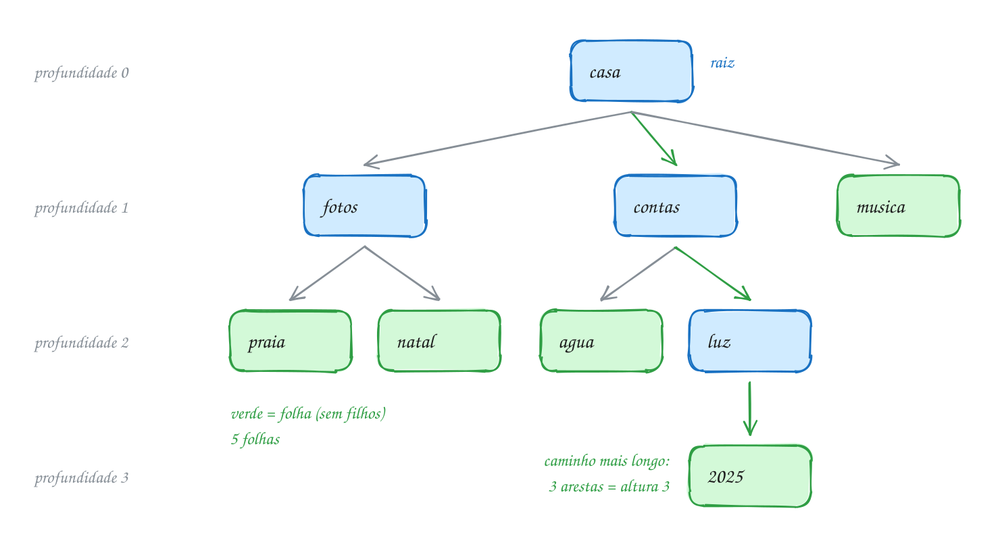
#include <stdio.h>
#include <stdlib.h>
#include <string.h>
#define MAX_FILHOS 4
typedef struct No {
char nome[16];
struct No *filhos[MAX_FILHOS]; // ponteiros para as subpastas
int qtd; // quantas subpastas tem
} No;
No *novo(const char *nome) {
No *n = malloc(sizeof(No));
if (n == NULL) {
exit(1);
}
strcpy(n->nome, nome);
n->qtd = 0;
return n;
}
No *adiciona(No *pai, const char *nome) {
No *filho = novo(nome);
pai->filhos[pai->qtd++] = filho;
return filho;
}
void mostra(const No *n, int profundidade) {
// %*s com "" imprime 2 * profundidade espaços: o recuo
printf("%*s%s (%d)\n", 2 * profundidade, "", n->nome, profundidade);
for (int i = 0; i < n->qtd; i++) {
mostra(n->filhos[i], profundidade + 1);
}
}
int conta_folhas(const No *n) {
if (n->qtd == 0) {
return 1; // sem filhos: é folha
}
int total = 0;
for (int i = 0; i < n->qtd; i++) {
total += conta_folhas(n->filhos[i]);
}
return total;
}
int altura(const No *n) {
int maior = -1;
for (int i = 0; i < n->qtd; i++) {
int h = altura(n->filhos[i]);
if (h > maior) {
maior = h;
}
}
return maior + 1; // folha: -1 + 1 = 0
}
void libera(No *n) {
for (int i = 0; i < n->qtd; i++) {
libera(n->filhos[i]); // os filhos primeiro
}
free(n);
}
int main(void) {
No *casa = novo("casa");
No *fotos = adiciona(casa, "fotos");
No *contas = adiciona(casa, "contas");
adiciona(casa, "musica");
adiciona(fotos, "praia");
adiciona(fotos, "natal");
adiciona(contas, "agua");
No *luz = adiciona(contas, "luz");
adiciona(luz, "2025");
mostra(casa, 0);
printf("Folhas: %d\n", conta_folhas(casa));
printf("Altura: %d\n", altura(casa));
libera(casa);
return 0;
}
// Saída:
// casa (0)
// fotos (1)
// praia (2)
// natal (2)
// contas (1)
// agua (2)
// luz (2)
// 2025 (3)
// musica (1)
// Folhas: 5
// Altura: 3
A altura não trata a folha à parte: ela não entra no laço, maior fica em -1
e a função devolve 0. Em casa, os filhos respondem 1, 2 e 0, e ela devolve
2 + 1 = 3:
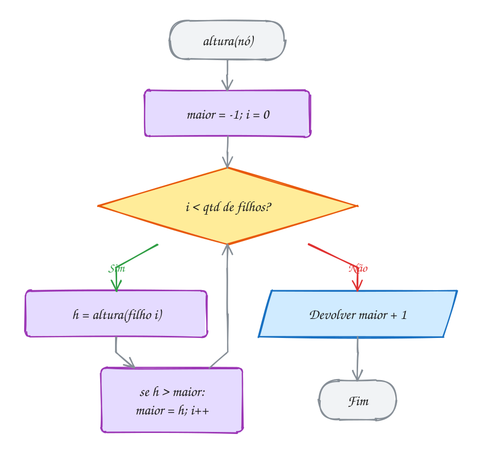
Exemplo A193 · Os mesmos nós, alturas diferentes
#include <stdio.h>
#include <stdlib.h>
#include <string.h>
#define MAX_FILHOS 4
typedef struct No {
char nome[16];
struct No *filhos[MAX_FILHOS];
int qtd;
} No;
No *novo(const char *nome) {
No *n = malloc(sizeof(No));
if (n == NULL) {
exit(1);
}
strcpy(n->nome, nome);
n->qtd = 0;
return n;
}
No *adiciona(No *pai, const char *nome) {
No *filho = novo(nome);
pai->filhos[pai->qtd++] = filho;
return filho;
}
int conta_folhas(const No *n) {
if (n->qtd == 0) {
return 1;
}
int total = 0;
for (int i = 0; i < n->qtd; i++) {
total += conta_folhas(n->filhos[i]);
}
return total;
}
int altura(const No *n) {
int maior = -1;
for (int i = 0; i < n->qtd; i++) {
int h = altura(n->filhos[i]);
if (h > maior) {
maior = h;
}
}
return maior + 1;
}
// o maior grau da árvore: compara o nó com o maior grau de cada filho
int maior_grau(const No *n) {
int maior = n->qtd;
for (int i = 0; i < n->qtd; i++) {
int g = maior_grau(n->filhos[i]);
if (g > maior) {
maior = g;
}
}
return maior;
}
void libera(No *n) {
for (int i = 0; i < n->qtd; i++) {
libera(n->filhos[i]);
}
free(n);
}
void resumo(const char *titulo, const No *raiz) {
printf("%-10s folhas %d, altura %d, maior grau %d\n", titulo,
conta_folhas(raiz), altura(raiz), maior_grau(raiz));
}
int main(void) {
// larga: o grupo da família, todo mundo direto embaixo do admin
No *grupo = novo("admin");
adiciona(grupo, "mae");
adiciona(grupo, "pai");
adiciona(grupo, "tia");
adiciona(grupo, "primo");
// funda: o sumário de um livro, cada item dentro do anterior
No *livro = novo("livro");
No *p = adiciona(livro, "cap 1");
p = adiciona(p, "secao 1.1");
p = adiciona(p, "item 1.1.1");
adiciona(p, "nota");
// caso de borda: um nó sozinho já é uma árvore (e é raiz e folha)
No *sozinho = novo("rascunho");
resumo("larga:", grupo); // 5 nós
resumo("funda:", livro); // 5 nós
resumo("sozinho:", sozinho); // 1 nó
libera(grupo);
libera(livro);
libera(sozinho);
return 0;
}
// Saída:
// larga: folhas 4, altura 1, maior grau 4
// funda: folhas 1, altura 4, maior grau 1
// sozinho: folhas 1, altura 0, maior grau 0
gcc ~/LPEDC/material/A193.c -o ~/LPEDC/material/A193 && ~/LPEDC/material/A193
Exemplo A194 · O organograma com dois ponteiros
#include <stdio.h>
#include <stdlib.h>
#include <string.h>
// "primeiro filho / próximo irmão": qualquer quantidade de filhos
// cabe em só dois ponteiros por nó
typedef struct No {
char cargo[16];
struct No *filho; // o primeiro filho
struct No *irmao; // o próximo irmão (mesmo pai)
} No;
No *novo(const char *cargo) {
No *n = malloc(sizeof(No));
if (n == NULL) {
exit(1);
}
strcpy(n->cargo, cargo);
n->filho = NULL;
n->irmao = NULL;
return n;
}
// coloca o novo filho no fim da fila de irmãos
No *contrata(No *chefe, const char *cargo) {
No *n = novo(cargo);
if (chefe->filho == NULL) {
chefe->filho = n;
} else {
No *p = chefe->filho;
while (p->irmao != NULL) {
p = p->irmao;
}
p->irmao = n;
}
return n;
}
// grau = quantos filhos o nó tem: anda pela fila de irmãos
int grau(const No *n) {
int g = 0;
for (const No *p = n->filho; p != NULL; p = p->irmao) {
g++;
}
return g;
}
void mostra(const No *n, int nivel) {
printf("%*s%s: grau %d\n", 2 * nivel, "", n->cargo, grau(n));
for (const No *p = n->filho; p != NULL; p = p->irmao) {
mostra(p, nivel + 1);
}
}
void libera(No *n) {
while (n != NULL) {
No *prox = n->irmao; // guarda antes do free
libera(n->filho);
free(n);
n = prox;
}
}
int main(void) {
No *dona = novo("dona");
No *gerente = contrata(dona, "gerente");
No *padeiro = contrata(dona, "padeiro");
contrata(gerente, "caixa 1");
contrata(gerente, "caixa 2");
contrata(gerente, "entregador");
contrata(padeiro, "ajudante");
mostra(dona, 0);
printf("Tamanho de um nó: %zu bytes\n", sizeof(No));
libera(dona);
return 0;
}
// Saída:
// dona: grau 2
// gerente: grau 3
// caixa 1: grau 0
// caixa 2: grau 0
// entregador: grau 0
// padeiro: grau 1
// ajudante: grau 0
// Tamanho de um nó: 32 bytes
gcc ~/LPEDC/material/A194.c -o ~/LPEDC/material/A194 && ~/LPEDC/material/A194
Exercício E577 · ★☆☆
O site de uma loja organiza os produtos em categorias:
loja
├── eletronicos
│ ├── celulares
│ └── tvs
│ ├── oled
│ └── led
├── casa
│ └── cozinha
└── moda
Escreva as funções novo, adiciona(pai, nome), altura e libera, monte a árvore no main e escreva ficha(n, prof), que imprime uma linha por categoria, recuada 2 espaços por nível, com a profundidade, o grau e a palavra "folha" quando o nó não tem filhos. Por fim, imprima a altura.
Saída esperada:
loja: prof 0, grau 3
eletronicos: prof 1, grau 2
celulares: prof 2, grau 0, folha
tvs: prof 2, grau 2
oled: prof 3, grau 0, folha
led: prof 3, grau 0, folha
casa: prof 1, grau 1
cozinha: prof 2, grau 0, folha
moda: prof 1, grau 0, folha
Altura: 3
Exercício E579 · ★★☆
As pastas de um computador formam esta árvore:
casa
├── fotos
│ ├── praia
│ └── natal
├── contas
│ ├── agua
│ └── luz
│ └── 2025
└── musica
Escreva profundidade_de(raiz, nome), que procura uma pasta pelo nome e devolve a profundidade dela (a raiz tem profundidade 0), ou -1 se a pasta não existir. Monte a árvore no main e teste luz, casa, 2025 e videos.
Saída esperada:
luz: 2
casa: 0
2025: 3
videos: -1
Exercício E580 · ★★☆
Cada pasta guarda arquivos soltos (campo mb, em megabytes):
casa (5)
├── fotos (10)
│ ├── praia (300)
│ └── natal (120)
└── contas (2)
├── agua (5)
└── luz (8)
Escreva tamanho(n), que soma a pasta com tudo que está dentro dela, e duas funções que mostram o tamanho total de cada pasta:
subpastas dela (a raiz por último);
subpastas, recuada 2 espaços por nível.
Saída esperada:
-- du --
300 MB praia
120 MB natal
430 MB fotos
5 MB agua
8 MB luz
15 MB contas
450 MB casa
-- arvore --
casa (450 MB)
fotos (430 MB)
praia (300 MB)
natal (120 MB)
contas (15 MB)
agua (5 MB)
luz (8 MB)
Exercício E582 · ★★★
O menu do app de delivery é uma árvore:
app
├── lanches
│ ├── x-salada
│ └── x-bacon
└── bebidas
├── suco
└── refri
├── lata
└── 2 litros
Escreva um programa (struct, montagem, função e liberação) que imprime o caminho da raiz até cada folha, com "/" entre os nomes, como um endereço de pasta, e no fim conta os caminhos.
Saída esperada:
app/lanches/x-salada
app/lanches/x-bacon
app/bebidas/suco
app/bebidas/refri/lata
app/bebidas/refri/2 litros
Total de caminhos: 5
A planilha recebe =(8-3)*(4+2) e precisa decidir o que calcular primeiro.
Os parênteses dizem que a subtração e a soma vêm antes, e a multiplicação
junta os dois resultados. Essa estrutura de "a conta de cima depende das duas
contas de baixo" é uma árvore em que cada operador tem exatamente dois
operandos. Árvores com no máximo dois filhos por nó aparecem tanto, na prova e
nos programas, que ganharam nome próprio.
Uma árvore binária é uma árvore em que cada nó tem no máximo dois filhos,
um à esquerda e outro à direita. A definição recursiva diz melhor:
uma árvore binária ou é vazia, o que em C se representa com NULL, ou é
um nó com uma subárvore esquerda e uma subárvore direita, cada uma
delas também uma árvore binária (CORMEN et al., 2024, cap. 12). A árvore vazia
é o caso base que encerra toda recursão sobre a árvore.
Aqui o lado importa. Um nó A com o filho B à esquerda e um nó A com o
filho B à direita são árvores diferentes, mesmo tendo os mesmos nós
(TENENBAUM; LANGSAM; AUGENSTEIN, 1995, cap. 5). Na conta, isso é óbvio:
8 - 3 e 3 - 8 têm os mesmos números e o mesmo operador, e dão resultados
diferentes. Em C, o nó é uma struct com o dado e dois ponteiros, esq e
dir, e um filho ausente é um ponteiro NULL.
Para mostrar, contar ou somar o que está numa árvore, você precisa passar por todos os nós. Um percurso é um jeito de visitar cada nó exatamente uma vez. Os três percursos clássicos são recursivos e só diferem na posição da visita em relação às duas chamadas (FEOFILOFF, 2009). Na pré-ordem, você visita a raiz antes das subárvores; na em ordem, entre a esquerda e a direita; na pós-ordem, depois das duas:
void em_ordem(No *r) {
if (r == NULL) return; // árvore vazia: nada a visitar
em_ordem(r->esq);
printf("%c ", r->info); // na pré-ordem, esta linha vem antes; na pós, depois
em_ordem(r->dir);
}
O quarto percurso, por nível, visita a árvore linha por linha, de cima para baixo, e não é recursivo. Ele usa uma fila (assunto 0085): põe a raiz na fila e, enquanto a fila não esvazia, tira o nó da frente, mostra o nó e põe os filhos dele no fim (CELES; RANGEL, 2002). Como a fila atende por ordem de chegada, todos os nós de um nível saem antes dos nós do nível seguinte.
A conta do churrasco vira uma árvore de expressão: os operadores ficam nos
nós internos e os números nas folhas. Cada percurso dela produz uma notação
conhecida, e a pós-ordem dá exatamente a pós-fixa do assunto 0084. Isso não é
coincidência: o * só pode ser aplicado depois que as duas subárvores foram
calculadas, e a pós-ordem visita a raiz depois das duas (TENENBAUM; LANGSAM;
AUGENSTEIN, 1995, cap. 5).
| Percurso | Ordem | Em (8-3)*(4+2) |
|---|---|---|
| pré-ordem | raiz, esquerda, direita | * - 8 3 + 4 2 (notação prefixa) |
| em ordem | esquerda, raiz, direita | 8 - 3 * 4 + 2 (infixa, sem parênteses) |
| pós-ordem | esquerda, direita, raiz | 8 3 - 4 2 + * (pós-fixa, a da calculadora HP) |
| por nível | linha por linha, de cima para baixo | * - + 8 3 4 2 |
Dois números ajudam a prever o comportamento. Uma árvore binária com n nós
tem n + 1 ponteiros NULL: são 2n ponteiros no total, e só n - 1 deles
apontam para algum nó, porque todo nó menos a raiz tem um pai. E a recursão
empilha altura + 1 chamadas de uma vez (TENENBAUM; LANGSAM; AUGENSTEIN, 1995,
cap. 7). Numa árvore equilibrada de um milhão de nós, isso dá uns 20 quadros
na pilha; numa árvore em fila indiana, com cada nó tendo um filho só, dá um
milhão, e a pilha estoura.
[!WARNING] A em ordem perde os parênteses:
8 - 3 * 4 + 2dá8 - 12 + 2 = -2, e não 30. Para mostrar a fórmula certa, abra(antes de cada subárvore e feche depois (exemplo A196).
A conta do churrasco, =(8-3)*(4+2) = 30: 8 pessoas, 3 não bebem, e cada uma
paga R$ 4 de cerveja e R$ 2 de gelo. Os operadores ficam nos nós internos
(roxo) e os números nas folhas (azul):
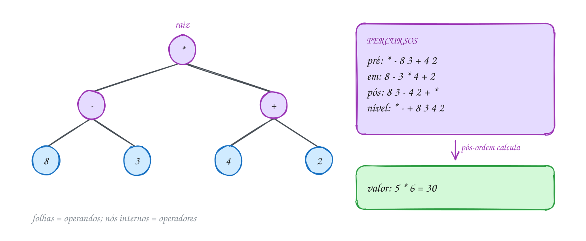
O nó guarda um char (dígito ou operador) e dois ponteiros. O resto é um TAD
(assunto 0074), arvore.h e arvore.c:
typedef struct No {
char info;
struct No *esq; // subárvore da esquerda
struct No *dir; // subárvore da direita
} No;
O cliente monta a árvore de baixo para cima com arv_cria(info, esq, dir) e
chama os percursos:
#include <stdio.h>
#include "arvore.h"
int main(void) {
// (8 - 3) * (4 + 2): 8 pessoas, 3 não bebem; cerveja R$ 4 + gelo R$ 2
No *menos = arv_cria('-', arv_cria('8', NULL, NULL), arv_cria('3', NULL, NULL));
No *mais = arv_cria('+', arv_cria('4', NULL, NULL), arv_cria('2', NULL, NULL));
No *raiz = arv_cria('*', menos, mais);
printf("Pré-ordem:");
arv_pre_ordem(raiz);
printf("\nEm ordem: ");
arv_em_ordem(raiz);
printf("\nPós-ordem:");
arv_pos_ordem(raiz);
printf("\nPor nível:");
arv_por_nivel(raiz);
printf("\nNós: %d, altura: %d\n", arv_conta(raiz), arv_altura(raiz));
raiz = arv_libera(raiz);
return 0;
}
// Saída:
// Pré-ordem: * - 8 3 + 4 2
// Em ordem: 8 - 3 * 4 + 2
// Pós-ordem: 8 3 - 4 2 + *
// Por nível: * - + 8 3 4 2
// Nós: 7, altura: 2
Dentro do arvore.c, a em ordem tem três linhas de verdade:
void arv_em_ordem(const No *r) {
if (r == NULL) {
return;
}
arv_em_ordem(r->esq);
printf(" %c", r->info);
arv_em_ordem(r->dir);
}
O caso base é a árvore vazia. Mover o printf dá a pré-ordem ou a pós-ordem:
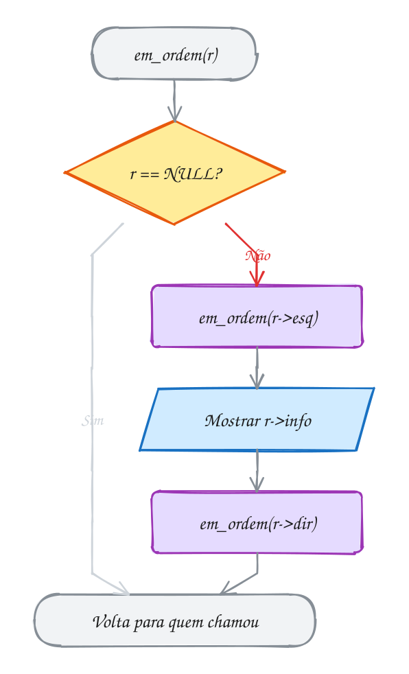
A pilha de chamadas da em ordem, a partir da raiz *. Cada linha é um
printf:
| Pilha de chamadas (topo à direita) | Mostra | Na tela até aqui |
|---|---|---|
* → - → 8 |
8 | 8 |
* → - |
- | 8 - |
* → - → 3 |
3 | 8 - 3 |
* |
* | 8 - 3 * |
* → + → 4 |
4 | 8 - 3 * 4 |
* → + |
+ | 8 - 3 * 4 + |
* → + → 2 |
2 | 8 - 3 * 4 + 2 |
Exemplo A195 · Duas árvores com a mesma em ordem
#include <stdio.h>
#include "0098-arvore.h"
void percursos(const char *titulo, const No *r) {
printf("%s\n pré:", titulo);
arv_pre_ordem(r);
printf("\n em:");
arv_em_ordem(r);
printf("\n pós:");
arv_pos_ordem(r);
printf("\n altura %d\n", arv_altura(r));
}
int main(void) {
// equilibrada: B na raiz, A à esquerda, C à direita
No *cheia = arv_cria('B', arv_cria('A', NULL, NULL), arv_cria('C', NULL, NULL));
// torta: cada nó só tem filho à direita (parece uma lista)
No *torta = arv_cria('A', NULL, arv_cria('B', NULL, arv_cria('C', NULL, NULL)));
// caso de borda: árvore vazia (os percursos não mostram nada)
No *vazia = NULL;
percursos("cheia:", cheia);
percursos("torta:", torta);
percursos("vazia:", vazia);
// a em ordem é igual nas duas primeiras: sozinha ela não diz a forma;
// a pré-ordem (ou a pós) junto com ela já diz
cheia = arv_libera(cheia);
torta = arv_libera(torta);
return 0;
}
// Saída:
// cheia:
// pré: B A C
// em: A B C
// pós: A C B
// altura 1
// torta:
// pré: A B C
// em: A B C
// pós: C B A
// altura 2
// vazia:
// pré:
// em:
// pós:
// altura -1
gcc ~/LPEDC/material/A195.c ~/LPEDC/material/0098-arvore.c -o ~/LPEDC/material/A195 && ~/LPEDC/material/A195
Exemplo A196 · Calculando a árvore de expressão
#include <stdio.h>
#include "0098-arvore.h"
// folha é um dígito; nó interno é um operador aplicado às duas subárvores
int avalia(const No *r) {
if (r->esq == NULL && r->dir == NULL) {
return r->info - '0'; // '8' vira 8
}
int a = avalia(r->esq); // primeiro as subárvores (pós-ordem)...
int b = avalia(r->dir);
switch (r->info) { // ...depois o operador da raiz
case '+': return a + b;
case '-': return a - b;
case '*': return a * b;
default: return a / b;
}
}
// em ordem com parênteses em volta de cada operação
void mostra(const No *r) {
if (r->esq == NULL && r->dir == NULL) {
printf("%c", r->info);
return;
}
printf("(");
mostra(r->esq);
printf(" %c ", r->info);
mostra(r->dir);
printf(")");
}
int main(void) {
No *raiz = arv_cria('*',
arv_cria('-', arv_cria('8', NULL, NULL), arv_cria('3', NULL, NULL)),
arv_cria('+', arv_cria('4', NULL, NULL), arv_cria('2', NULL, NULL)));
mostra(raiz);
printf(" = %d\n", avalia(raiz));
// troca a subárvore da direita: em vez de (4 + 2), só 9
raiz->dir = arv_libera(raiz->dir); // poda primeiro (senão vaza)
raiz->dir = arv_cria('9', NULL, NULL);
mostra(raiz);
printf(" = %d\n", avalia(raiz));
raiz = arv_libera(raiz);
return 0;
}
// Saída:
// ((8 - 3) * (4 + 2)) = 30
// ((8 - 3) * 9) = 45
gcc ~/LPEDC/material/A196.c ~/LPEDC/material/0098-arvore.c -o ~/LPEDC/material/A196 && ~/LPEDC/material/A196
Exercício E583 · ★☆☆
Com arv_cria, do TAD arvore.h, monte esta árvore, imprima os quatro percursos (pré-ordem, em ordem, pós-ordem e por nível), a quantidade de nós e a altura, e libere com arv_libera.
M
├── esq: G
│ ├── esq: C
│ └── dir: J
└── dir: T
└── dir: X
Saída esperada:
Pré-ordem: M G C J T X
Em ordem: C G J M T X
Pós-ordem: C J G X T M
Por nível: M G T C J X
Nós: 6, altura: 2
gcc ~/LPEDC/material/E583.c ~/LPEDC/material/0098-arvore.c -o ~/LPEDC/material/E583 && ~/LPEDC/material/E583
Exercício E585 · ★★☆
Com o TAD arvore.h, monte a árvore da expressão (8 - 3) * (4 + 2): raiz '*', filho esquerdo '-' (com 8 e 3) e filho direito '+' (com 4 e 2). Escreva espelha(r), que troca de lugar, em todo nó, a subárvore da esquerda com a da direita. Não crie nós novos: troque só ponteiros. Imprima a em ordem antes e depois.
Saída esperada:
Antes: 8 - 3 * 4 + 2
Depois: 2 + 4 * 3 - 8
gcc ~/LPEDC/material/E585.c ~/LPEDC/material/0098-arvore.c -o ~/LPEDC/material/E585 && ~/LPEDC/material/E585
Exercício E586 · ★★☆
Com o TAD arvore.h, monte a árvore (8 - 3) * (4 + 2): raiz '*', filho esquerdo '-' (com 8 e 3) e filho direito '+' (com 4 e 2). Escreva deitada(r, nivel), que desenha a árvore deitada: a raiz na coluna 0 e cada nível 4 espaços mais à direita. A subárvore da DIREITA aparece em cima e a da esquerda embaixo.
Saída esperada:
2
+
4
*
3
-
8
gcc ~/LPEDC/material/E586.c ~/LPEDC/material/0098-arvore.c -o ~/LPEDC/material/E586 && ~/LPEDC/material/E586
Exercício E588 · ★★★
Uma árvore binária cabe numa string: escreva a pré-ordem e marque cada subárvore vazia com um ponto. A árvore da expressão vira "*-8..3..+4..2.." e a árvore M, G, T, C, J, X do E583 vira "MGC..J..T.X..".
Com o TAD arvore.h, escreva constroi(s, &pos), que lê a string a partir de s[pos] e devolve a árvore montada com arv_cria. Para cada string, mostre a em ordem, a pós-ordem, o número de nós e a altura.
Saída esperada:
*-8..3..+4..2..
em ordem: 8 - 3 * 4 + 2
pós-ordem: 8 3 - 4 2 + *
nós: 7, altura: 2
MGC..J..T.X..
em ordem: C G J M T X
pós-ordem: C J G X T M
nós: 6, altura: 2
gcc ~/LPEDC/material/E588.c ~/LPEDC/material/0098-arvore.c -o ~/LPEDC/material/E588 && ~/LPEDC/material/E588
A catraca da academia precisa achar a matrícula na hora, e alunos novos se matriculam todo dia. No vetor ordenado, a busca binária do 0090 é rápida, mas cada aluno novo obriga a empurrar metade do vetor para abrir espaço. Na lista encadeada, inserir é barato, mas a busca anda nó a nó, em O(n). Você quer a busca do vetor ordenado com a inserção da lista. A árvore binária do 0098, com uma regra a mais, entrega as duas coisas.
A árvore binária de busca, ou BST (do inglês binary search tree), é uma árvore binária em que vale uma regra em todo nó: as chaves da subárvore esquerda são todas menores que a chave do nó, e as da subárvore direita são todas maiores (CORMEN et al., 2024, cap. 12). A regra vale para a subárvore inteira, não só para os filhos: se a raiz é 50, nenhum nó em qualquer ponto da esquerda pode passar de 50.
Buscar é a busca binária feita na árvore. Você compara a chave com a raiz. Se
é igual, achou. Se é menor, ela só pode estar na subárvore esquerda, e a
direita inteira fica para trás; se é maior, vale o contrário. Você repete a
comparação no nó seguinte até achar a chave ou chegar a um NULL, e chegar
ao NULL quer dizer que a chave não existe (FEOFILOFF, 2009). Cada
comparação desce um nível e descarta uma subárvore.
Inserir é a mesma descida. Você procura a chave nova como se ela já
existisse; no NULL em que a busca falharia, pendura um nó novo. Por isso o
nó novo sempre entra como folha, e nenhum nó antigo muda de lugar. A
versão recursiva devolve a raiz da subárvore em que inseriu, e quem chamou
guarda o retorno: o pai faz r->esq = bst_insere(r->esq, chave). Quando a
descida chega ao NULL, a função devolve o nó novo, e essa atribuição faz o
ponteiro do pai passar a apontar para ele. Uma chave repetida é ignorada, e a
árvore não guarda duplicatas (FEOFILOFF, 2009). A outra forma de escrever é
passar o endereço do ponteiro, um No **, como você faz com o scanf.
A regra da BST tem um efeito bonito no percurso em ordem do 0098: ele visita a esquerda (os menores), depois o nó, depois a direita (os maiores), e por isso lista as chaves em ordem crescente. O nó que vem logo depois de outro na em ordem é o seu sucessor; o que vem logo antes é o seu antecessor. O menor nó da árvore é o que fica mais à esquerda, e o maior, o que fica mais à direita (CORMEN et al., 2024, cap. 12).
O custo da busca e da inserção é o tamanho do caminho percorrido: no máximo altura + 1 comparações. Numa árvore cheia, em que todos os níveis estão completos, a altura fica perto de log₂ n. Com 7 chaves são 3 níveis; com um milhão de chaves, uns 20 (ZIVIANI, 2010, cap. 5). O problema é que nada garante a árvore cheia. A forma da BST depende da ordem em que as chaves chegam, e o assunto 0101 trata de corrigir isso.
[!WARNING] A forma da BST depende da ordem de chegada. As sete matrículas em ordem crescente formam uma lista disfarçada de altura 6 (exemplo A198). E sem
raiz = bst_insere(raiz, ...)o nó criado se perde.
A catraca da academia procura matrículas. Sete alunos chegaram na ordem 50,
30, 70, 20, 40, 60 e 80. A busca do 60 passa por 50 e 70; a do 45 desce 50,
30, 40 e cai no NULL à direita do 40:
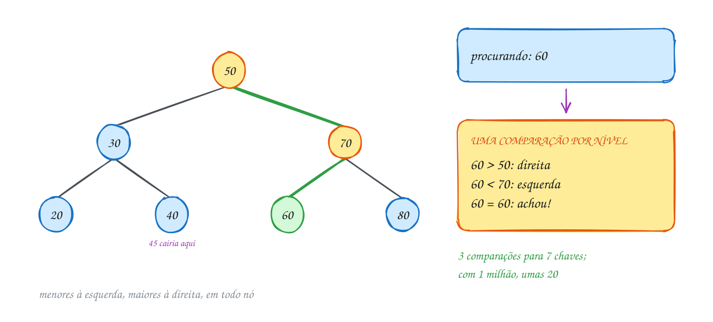
O TAD fica em bst.h e bst.c. As duas funções principais:
No *bst_insere(No *r, int chave) {
if (r == NULL) {
return novo_no(chave); // achou o lugar vazio: vira folha
}
if (chave < r->chave) {
r->esq = bst_insere(r->esq, chave);
} else if (chave > r->chave) {
r->dir = bst_insere(r->dir, chave);
}
return r; // igual: já existe, não insere de novo
}
No *bst_busca(No *r, int chave) {
while (r != NULL && r->chave != chave) {
r = chave < r->chave ? r->esq : r->dir;
}
return r;
}
A busca dispensa recursão: um laço desce um nível por volta. O exemplo mostra o caminho:
#include <stdio.h>
#include "bst.h"
void procura(const No *r, int chave) {
printf("Busca %d:", chave);
while (r != NULL) {
printf(" %d", r->chave);
if (chave == r->chave) {
printf(" -> achou\n");
return;
}
r = chave < r->chave ? r->esq : r->dir;
}
printf(" -> NULL, não existe\n");
}
int main(void) {
int matriculas[] = {50, 30, 70, 20, 40, 60, 80};
No *raiz = NULL;
for (int i = 0; i < 7; i++) {
raiz = bst_insere(raiz, matriculas[i]);
}
printf("Em ordem:");
bst_em_ordem(raiz);
printf("\n");
procura(raiz, 60);
procura(raiz, 45);
printf("Altura: %d\n", bst_altura(raiz));
raiz = bst_libera(raiz);
return 0;
}
// Saída:
// Em ordem: 20 30 40 50 60 70 80
// Busca 60: 50 70 60 -> achou
// Busca 45: 50 30 40 -> NULL, não existe
// Altura: 2
Cada volta faz no máximo duas perguntas e desce um nível. O caminho verde é a busca do 60:
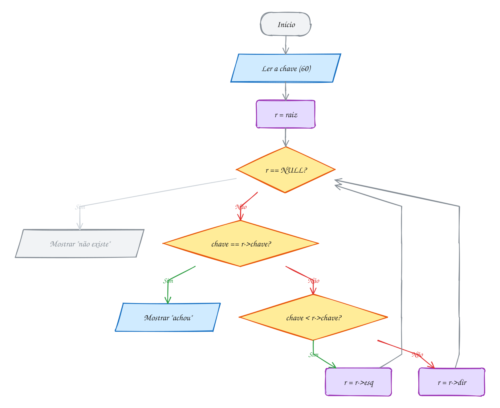
Exemplo A197 · Onde cada pedido vai morar
#include <stdio.h>
#include "0099-bst.h"
// antes de inserir, refaz a descida que o insere vai fazer e conta onde a
// chave vai virar folha (ou se já existe)
void anuncia(const No *r, int chave) {
printf("%2d:", chave);
if (r == NULL) {
printf(" árvore vazia, vira a raiz\n");
return;
}
while (1) {
printf(" %d", r->chave);
if (chave == r->chave) {
printf(" -> já existe, ignorado\n");
return;
}
const No *prox = chave < r->chave ? r->esq : r->dir;
if (prox == NULL) {
printf(" -> filho %s do %d\n", chave < r->chave ? "esquerdo" : "direito", r->chave);
return;
}
r = prox;
}
}
int main(void) {
// números dos pedidos da lanchonete, na ordem em que chegaram
int pedidos[] = {42, 17, 63, 8, 25, 50, 25, 30};
No *raiz = NULL;
for (int i = 0; i < 8; i++) {
anuncia(raiz, pedidos[i]);
raiz = bst_insere(raiz, pedidos[i]);
}
// o primeiro que chegou continua na raiz: inserir nunca mexe no que já está
printf("Raiz: %d\n", raiz->chave);
printf("Altura: %d\n", bst_altura(raiz));
raiz = bst_libera(raiz);
return 0;
}
// Saída:
// 42: árvore vazia, vira a raiz
// 17: 42 -> filho esquerdo do 42
// 63: 42 -> filho direito do 42
// 8: 42 17 -> filho esquerdo do 17
// 25: 42 17 -> filho direito do 17
// 50: 42 63 -> filho esquerdo do 63
// 25: 42 17 25 -> já existe, ignorado
// 30: 42 17 25 -> filho direito do 25
// Raiz: 42
// Altura: 3
gcc ~/LPEDC/material/A197.c ~/LPEDC/material/0099-bst.c -o ~/LPEDC/material/A197 && ~/LPEDC/material/A197
Exemplo A198 · A ordem de chegada muda a árvore
#include <stdio.h>
#include "0099-bst.h"
No *monta(const int v[], int n) {
No *r = NULL;
for (int i = 0; i < n; i++) {
r = bst_insere(r, v[i]);
}
return r;
}
int main(void) {
int embaralhada[] = {50, 30, 70, 20, 40, 60, 80};
int crescente[] = {20, 30, 40, 50, 60, 70, 80};
No *a = monta(embaralhada, 7);
No *b = monta(crescente, 7);
// as duas guardam as mesmas chaves: a em ordem é igual
printf("A em ordem:");
bst_em_ordem(a);
printf("\nB em ordem:");
bst_em_ordem(b);
printf("\n");
// mas a forma é outra: B virou uma lista, tudo pendurado à direita
printf("Altura de A: %d\n", bst_altura(a));
printf("Altura de B: %d\n", bst_altura(b));
printf("Raiz de B: %d, filho esquerdo: %s\n", b->chave, b->esq == NULL ? "NULL" : "existe");
a = bst_libera(a);
b = bst_libera(b);
return 0;
}
// Saída:
// A em ordem: 20 30 40 50 60 70 80
// B em ordem: 20 30 40 50 60 70 80
// Altura de A: 2
// Altura de B: 6
// Raiz de B: 20, filho esquerdo: NULL
gcc ~/LPEDC/material/A198.c ~/LPEDC/material/0099-bst.c -o ~/LPEDC/material/A198 && ~/LPEDC/material/A198
Exercício E589 · ★☆☆
O posto de saúde guarda as senhas de atendimento numa BST. Com o TAD bst.h, insira, nesta ordem, 45 20 70 10 30 60 90 25. Escreva nivel_de(r, chave), que desce pela árvore como a busca e devolve a profundidade da chave (a raiz tem nível 0), ou -1 se a chave não estiver lá. Mostre a em ordem, a altura e o nível das senhas 45, 70, 30, 25 e 65.
Saída esperada:
Em ordem: 10 20 25 30 45 60 70 90
Altura: 3
Senha 45: nível 0
Senha 70: nível 1
Senha 30: nível 2
Senha 25: nível 3
Senha 65: nível -1
gcc ~/LPEDC/material/E589.c ~/LPEDC/material/0099-bst.c -o ~/LPEDC/material/E589 && ~/LPEDC/material/E589
Exercício E591 · ★★☆
Uma loja guarda os preços (em reais, inteiros) numa BST. Com o TAD bst.h, insira, nesta ordem, 50 30 70 20 40 60 80 10 90. O cliente quer ver só o que custa de R$ 35 a R$ 65. Escreva faixa(r, min, max, &visitados), que imprime em ordem crescente as chaves em [min, max] e conta os nós que visitou. Não entre numa subárvore que não pode ter resposta: se a chave do nó é menor que min, nada à esquerda dele serve.
Saída esperada:
Entre 35 e 65: 40 50 60
Nós visitados: 5 de 9
gcc ~/LPEDC/material/E591.c ~/LPEDC/material/0099-bst.c -o ~/LPEDC/material/E591 && ~/LPEDC/material/E591
Exercício E592 · ★★☆
Escreva insere_sem_recursao(No **raiz, int chave): a inserção na BST com um laço, recebendo o ENDEREÇO da raiz. A função não devolve nada e o main não faz raiz = .... Chave repetida é ignorada. Com o TAD bst.h (só o tipo No, bst_em_ordem, bst_altura e bst_libera), insira as matrículas 50 30 70 20 40 60 80 30 e mostre a em ordem e a altura.
Saída esperada:
Em ordem: 20 30 40 50 60 70 80
Altura: 2
gcc ~/LPEDC/material/E592.c ~/LPEDC/material/0099-bst.c -o ~/LPEDC/material/E592 && ~/LPEDC/material/E592
Exercício E594 · ★★★
Na rifa da festa junina, alguns números de bilhete foram vendidos mais de uma vez. Os números anotados, na ordem da venda:
23 8 41 15 8 30 23 4 41 12 41
Com o TAD bst.h, escreva um programa que avisa cada número repetido no momento em que ele aparece, e depois mostra os números distintos em ordem crescente, quantos são e a altura da árvore.
Saída esperada:
Repetido: 8
Repetido: 23
Repetido: 41
Repetido: 41
Distintos: 4 8 12 15 23 30 41
Quantos: 7
Altura: 3
gcc ~/LPEDC/material/E594.c ~/LPEDC/material/0099-bst.c -o ~/LPEDC/material/E594 && ~/LPEDC/material/E594
Três alunos cancelaram o plano, e as matrículas 30, 40 e 20 precisam sair da árvore. Inserir foi fácil porque todo nó novo entra como folha e ninguém muda de lugar. Remover é mais delicado: o nó que sai pode ter filhos, e depois da remoção a regra da BST do 0099 precisa continuar valendo em todo nó.
O primeiro passo é a busca de sempre, que acha o nó. O que fazer com ele
depende de quantos filhos ele tem, e são três casos (TENENBAUM; LANGSAM;
AUGENSTEIN, 1995, cap. 7). Se o nó é uma folha, você libera o nó e o pai
passa a apontar para NULL. Se o nó tem um filho, esse filho sobe para o
lugar dele: o avô passa a apontar direto para o neto e "pula" o nó removido.
A regra continua valendo, porque o filho e tudo abaixo dele já estavam do
lado certo do avô.
Os dois primeiros casos cabem num código só. A regra é "o filho que existe
sobe", e na folha esse filho é NULL, então o pai passa a apontar para
NULL sem nenhum teste extra (CORMEN et al., 2024, cap. 12).
O caso difícil é o nó com dois filhos. Não dá para subir os dois, porque o pai só tem um ponteiro para aquele lugar. A saída é procurar outro nó que possa ocupar a posição: alguém maior que tudo à esquerda e menor que tudo à direita. O candidato natural é o sucessor, a menor chave da subárvore direita, que o 0099 definiu como o nó logo depois na em ordem (CORMEN et al., 2024, cap. 12). Para achá-lo, desça uma vez à direita e depois à esquerda até não dar mais.
O sucessor tem uma propriedade que salva a remoção: ele não tem filho esquerdo, porque se tivesse, esse filho seria menor e o sucessor seria ele. Então você copia a chave do sucessor para o nó que ia sair e remove o sucessor da subárvore direita, e essa segunda remoção sempre cai num dos casos fáceis. Usar o antecessor, a maior chave da subárvore esquerda, funciona do mesmo jeito, mas a árvore final sai diferente; este TAD usa o sucessor, como o Cormen (FEOFILOFF, 2009).
| Caso | O que fazer | No exemplo |
|---|---|---|
| folha | dá free e o pai passa a apontar para NULL |
remover o 20 |
| um filho | o filho sobe para o lugar dele; o avô "pula" o nó | remover o 40: o 45 sobe |
| dois filhos | troca pelo sucessor e remove o sucessor | remover o 30: o 35 assume |
O código segue o molde da inserção: a função devolve a raiz da subárvore
depois da remoção, o pai faz r->esq = bst_remove(r->esq, chave) e o cliente
faz raiz = bst_remove(raiz, ...), porque a própria raiz pode sair. O custo é
o da descida, O(altura) (CELES; RANGEL, 2002). Copiar só a chave basta
quando o nó guarda um int. Com uma struct grande, compensa religar os
ponteiros em vez de copiar dados, e é isso que o procedimento TRANSPLANT do
Cormen faz.
[!WARNING]
bst_remove(raiz->esq, 20);sem atribuir o retorno dáfreeno 20 mas deixa o pai apontando para o endereço antigo: ponteiro solto, que o AddressSanitizer acusa comoheap-use-after-free. Vale também pararaiz.
Três alunos cancelaram o plano, e as matrículas 30, 40 e 20 saem. O 30 tem dois filhos: o sucessor fica à direita (40) e depois à esquerda (35). O 35 ocupa o lugar do 30, e o 35 de baixo, que era folha, sai:
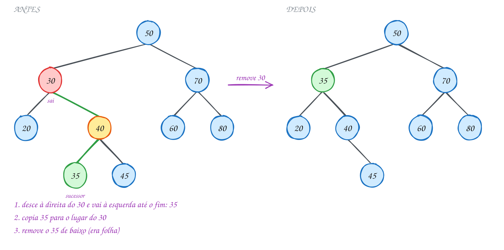
A função completa, no bst.c. Ela copia só a chave; com uma struct
grande, compensa religar ponteiros:
No *bst_remove(No *r, int chave) {
if (r == NULL) {
return NULL; // não achou: nada a remover
}
if (chave < r->chave) {
r->esq = bst_remove(r->esq, chave);
} else if (chave > r->chave) {
r->dir = bst_remove(r->dir, chave);
} else if (r->esq == NULL || r->dir == NULL) {
// folha ou um filho: o filho (ou NULL) sobe para o lugar do nó
No *filho = r->esq != NULL ? r->esq : r->dir;
free(r);
return filho;
} else {
// dois filhos: copia o sucessor (o menor da direita) e remove ele lá
No *suc = r->dir;
while (suc->esq != NULL) {
suc = suc->esq;
}
r->chave = suc->chave;
r->dir = bst_remove(r->dir, suc->chave);
}
return r;
}
O cliente remove as três matrículas e mostra a pré-ordem, que revela a forma da árvore (a em ordem sairia sempre crescente):
#include <stdio.h>
#include "bst.h"
void pre(const No *r) {
if (r == NULL) {
return;
}
printf(" %d", r->chave);
pre(r->esq);
pre(r->dir);
}
void mostra(const char *rotulo, const No *r) {
printf("%-11s pré:", rotulo);
pre(r);
printf("\n");
}
int main(void) {
int matriculas[] = {50, 30, 70, 20, 40, 60, 80, 35, 45};
No *raiz = NULL;
for (int i = 0; i < 9; i++) {
raiz = bst_insere(raiz, matriculas[i]);
}
mostra("Antes", raiz);
raiz = bst_remove(raiz, 30); // dois filhos: o sucessor 35 assume
mostra("Remove 30", raiz);
raiz = bst_remove(raiz, 40); // um filho: o 45 sobe
mostra("Remove 40", raiz);
raiz = bst_remove(raiz, 20); // folha: só sai
mostra("Remove 20", raiz);
raiz = bst_remove(raiz, 99); // não existe: nada muda
mostra("Remove 99", raiz);
raiz = bst_libera(raiz);
return 0;
}
// Saída:
// Antes pré: 50 30 20 40 35 45 70 60 80
// Remove 30 pré: 50 35 20 40 45 70 60 80
// Remove 40 pré: 50 35 20 45 70 60 80
// Remove 20 pré: 50 35 45 70 60 80
// Remove 99 pré: 50 35 45 70 60 80
O caminho verde é a chamada que encontra o 30: cai no caso de dois filhos, copia o 35 e faz uma segunda remoção, do 35, que termina no caso fácil:
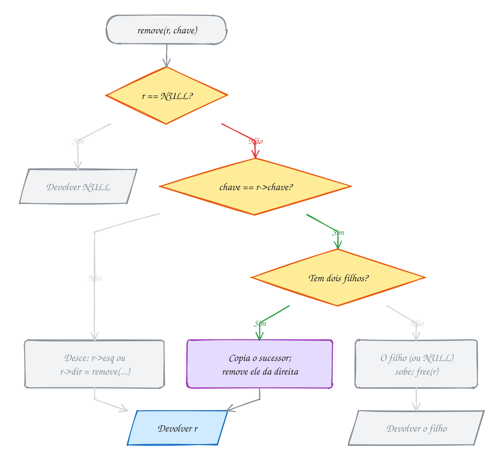
Exemplo A199 · Quando o sucessor também tem filho
#include <stdio.h>
#include "0100-bst.h"
void pre(const No *r) {
if (r == NULL) {
return;
}
printf(" %d", r->chave);
pre(r->esq);
pre(r->dir);
}
void mostra(const char *rotulo, const No *r) {
printf("%-14s pré:", rotulo);
pre(r);
printf(" (raiz %d)\n", r->chave);
}
int main(void) {
// códigos dos produtos do estoque do mercadinho
int codigos[] = {40, 20, 60, 50, 70, 55, 52};
No *raiz = NULL;
for (int i = 0; i < 7; i++) {
raiz = bst_insere(raiz, codigos[i]);
}
mostra("Antes", raiz);
// a raiz tem dois filhos; o sucessor (50) não é folha: tem o 55 à direita.
// o 50 sobe para a raiz e o 55 (com o 52) sobe para o lugar dele
raiz = bst_remove(raiz, 40);
mostra("Remove 40", raiz);
// o 20 era o único à esquerda: agora a raiz só tem filho direito
raiz = bst_remove(raiz, 20);
mostra("Remove 20", raiz);
// raiz com UM filho: nada de sucessor, o filho direito vira a raiz
raiz = bst_remove(raiz, 50);
mostra("Remove 50", raiz);
raiz = bst_libera(raiz);
return 0;
}
// Saída:
// Antes pré: 40 20 60 50 55 52 70 (raiz 40)
// Remove 40 pré: 50 20 60 55 52 70 (raiz 50)
// Remove 20 pré: 50 60 55 52 70 (raiz 50)
// Remove 50 pré: 60 55 52 70 (raiz 60)
gcc ~/LPEDC/material/A199.c ~/LPEDC/material/0100-bst.c -o ~/LPEDC/material/A199 && ~/LPEDC/material/A199
Exemplo A200 · Até a raiz vai embora
#include <stdio.h>
#include "0100-bst.h"
int main(void) {
int matriculas[] = {50, 30, 70, 20, 40, 60, 80};
No *raiz = NULL;
for (int i = 0; i < 7; i++) {
raiz = bst_insere(raiz, matriculas[i]);
}
// remove sempre a raiz: o ponteiro raiz muda a cada passo
while (raiz != NULL) {
int sai = raiz->chave;
raiz = bst_remove(raiz, sai);
printf("Saiu %d, nova raiz: ", sai);
if (raiz == NULL) {
printf("NULL (árvore vazia)\n");
} else {
printf("%d, em ordem:", raiz->chave);
bst_em_ordem(raiz);
printf("\n");
}
}
return 0; // nada a liberar: remove já deu free em cada nó
}
// Saída:
// Saiu 50, nova raiz: 60, em ordem: 20 30 40 60 70 80
// Saiu 60, nova raiz: 70, em ordem: 20 30 40 70 80
// Saiu 70, nova raiz: 80, em ordem: 20 30 40 80
// Saiu 80, nova raiz: 30, em ordem: 20 30 40
// Saiu 30, nova raiz: 40, em ordem: 20 40
// Saiu 40, nova raiz: 20, em ordem: 20
// Saiu 20, nova raiz: NULL (árvore vazia)
gcc ~/LPEDC/material/A200.c ~/LPEDC/material/0100-bst.c -o ~/LPEDC/material/A200 && ~/LPEDC/material/A200
Exercício E595 · ★☆☆
Com o TAD bst.h, monte a BST inserindo 60 25 80 10 40 70 90 35 50 e remova, um de cada vez, o 10, o 80 e o 25 com bst_remove. Escreva pre(r), a pré-ordem, e caso(r, chave), que acha o nó da chave e devolve "folha", "um filho", "dois filhos" ou "não existe". Chame caso ANTES de cada remoção e mostre a pré-ordem depois. O rótulo ocupa 24 colunas: use printf("%-24spré", rotulo).
Saída esperada:
Antes: pré 60 25 10 40 35 50 80 70 90
Sem o 10 (folha): pré 60 25 40 35 50 80 70 90
Sem o 80 (dois filhos): pré 60 25 40 35 50 90 70
Sem o 25 (um filho): pré 60 40 35 50 90 70
gcc ~/LPEDC/material/E595.c ~/LPEDC/material/0100-bst.c -o ~/LPEDC/material/E595 && ~/LPEDC/material/E595
Exercício E597 · ★★☆
O bst_remove do TAD usa o sucessor nos casos de dois filhos. Escreva remove_antecessor(r, chave), a mesma remoção, mas que usa o ANTECESSOR: a maior chave da subárvore esquerda. Com o TAD bst.h, insira as matrículas 50 30 70 20 40 60 80 35 45, escreva pre(r) (pré-ordem) e remova o 30 e depois o 50.
Saída esperada:
Antes: pré 50 30 20 40 35 45 70 60 80
Sem o 30: pré 50 20 40 35 45 70 60 80
Sem o 50: pré 45 20 40 35 70 60 80
gcc ~/LPEDC/material/E597.c ~/LPEDC/material/0100-bst.c -o ~/LPEDC/material/E597 && ~/LPEDC/material/E597
Exercício E598 · ★★☆
A academia chama os alunos pela ordem de matrícula, sempre o menor número primeiro. Com o TAD bst.h, insira as matrículas 50 30 70 20 40 60 80 35 45 e escreva No *remove_menor(No *r, int *menor): remove o nó mais à esquerda (que tem no máximo um filho), guarda a chave em *menor e devolve a nova raiz. Chame-a até a árvore esvaziar, numerando as chamadas.
Saída esperada:
Chamada 1: matrícula 20
Chamada 2: matrícula 30
Chamada 3: matrícula 35
Chamada 4: matrícula 40
Chamada 5: matrícula 45
Chamada 6: matrícula 50
Chamada 7: matrícula 60
Chamada 8: matrícula 70
Chamada 9: matrícula 80
Árvore vazia: sim
gcc ~/LPEDC/material/E598.c ~/LPEDC/material/0100-bst.c -o ~/LPEDC/material/E598 && ~/LPEDC/material/E598
Exercício E599 · ★★★
A academia vai encerrar a turma das matrículas de 35 a 65. Com o TAD bst.h, insira 50 30 70 20 40 60 80 35 45 e escreva remove_faixa(r, a, b), que remove da BST todas as chaves em [a, b] e devolve a nova raiz. Mostre a em ordem antes e depois e, no fim, a chave da raiz e a altura.
Saída esperada:
Antes: 20 30 35 40 45 50 60 70 80
Depois: 20 30 70 80
Raiz: 70, altura: 2
gcc ~/LPEDC/material/E599.c ~/LPEDC/material/0100-bst.c -o ~/LPEDC/material/E599 && ~/LPEDC/material/E599
A lanchonete numera os pedidos 10, 20, 30, 40 e assim por diante, sempre em ordem crescente. Numa BST comum (0099), cada pedido vira filho direito do anterior, e a árvore se degenera numa lista de altura n - 1. Com mil pedidos, achar o último custa mil comparações, e a promessa de O(log n) vai embora. O problema não está na busca, mas na forma da árvore, que depende da ordem de chegada. Falta uma BST que não deixe a forma piorar.
A saída é uma BST que se conserta sozinha a cada inserção: a árvore AVL, cujo nome vem das iniciais de seus criadores, Adelson-Velsky e Landis. A regra é que, em todo nó, as alturas das duas subárvores diferem de no máximo 1 (ADELSON-VELSKY; LANDIS, 1962). Pense numa balança de dois pratos em cada nó: um lado pode pesar um pouco mais que o outro, nunca dois níveis a mais.
Para vigiar a regra, cada nó guarda a própria altura e calcula o fator de
balanceamento, fb = altura(esq) - altura(dir). Numa AVL, todo nó tem
fator -1, 0 ou 1. Fator 2 quer dizer "pesado à esquerda", e -2, "pesado à
direita". Há livros que fazem a conta ao contrário, direita menos esquerda; o
sinal troca, a regra não (TENENBAUM; LANGSAM; AUGENSTEIN, 1995, cap. 7).
A recompensa é uma altura garantida. Uma AVL com n chaves nunca passa de cerca de 1,44 · log₂ n de altura (TENENBAUM; LANGSAM; AUGENSTEIN, 1995, cap. 7). Os mil pedidos da lanchonete cabem numa árvore de altura 9, e não 999, e buscar, inserir e remover voltam a custar O(log n).
A inserção começa igual à da BST: desce e pendura uma folha. A novidade vem na volta da recursão. Cada ancestral do nó novo, do pai até a raiz, atualiza a própria altura e confere o fator (CORMEN et al., 2024). Se algum achar 2 ou -2, ele se conserta ali mesmo, antes de devolver o controle ao pai.
O conserto é a rotação: um filho sobe, o pai desce, e a ordem da BST
continua valendo. Na rotação à esquerda no nó r, o filho direito d sobe
para o lugar de r, e r vira filho esquerdo de d. A antiga subárvore
esquerda de d precisa de um novo lugar e vira a subárvore direita de r;
ela cabe ali porque suas chaves são maiores que r e menores que d. O
percurso em ordem não muda, só a forma. A rotação mexe em poucos ponteiros e
custa O(1) (CORMEN et al., 2024, cap. 13). A rotação à direita é o espelho.
Qual rotação usar depende de onde está o peso. Se o nó pesa à direita e o filho direito também, o caso é direita-direita, e uma rotação à esquerda no nó resolve. Se o nó pesa à direita mas o filho direito pesa à esquerda, o caminho faz um "zigue-zague", e a rotação simples só espelharia o problema. Esse caso pede a rotação dupla: a primeira rotação, no filho, endireita o caminho; a segunda, no nó, equilibra. Cada inserção faz no máximo uma rotação, simples ou dupla (TENENBAUM; LANGSAM; AUGENSTEIN, 1995, cap. 7). A tabela resume os quatro casos:
| Caso | Fator do nó | Fator do filho pesado | Conserto |
|---|---|---|---|
| esquerda-esquerda | +2 | +1 ou 0 (esquerdo) | rotação à direita no nó |
| direita-direita | -2 | -1 ou 0 (direito) | rotação à esquerda no nó |
| esquerda-direita | +2 | -1 (esquerdo) | à esquerda no filho, depois à direita no nó |
| direita-esquerda | -2 | +1 (direito) | à direita no filho, depois à esquerda no nó |
A AVL não é a única árvore que se equilibra. A árvore rubro-negra (0177) e a árvore B (0146) também garantem O(log n), com regras diferentes (CORMEN et al., 2024, caps. 13 e 18).
[!WARNING] No zigue-zague, a rotação simples não conserta: só espelha o problema. Por isso o código olha o fator do filho. E ligue a nova raiz de volta no pai (
return rot_esquerda(r)); senão o pai aponta para o nó que desceu.
A lanchonete numera os pedidos em ordem crescente, e a BST comum viraria uma lista. Na AVL, inserir 10, 20 e 30 gira o 10 à esquerda e o 20 sobe. Depois, com 20 (10, 40 (30, 50)), o 25 pede rotação dupla e o 30 vai para a raiz:
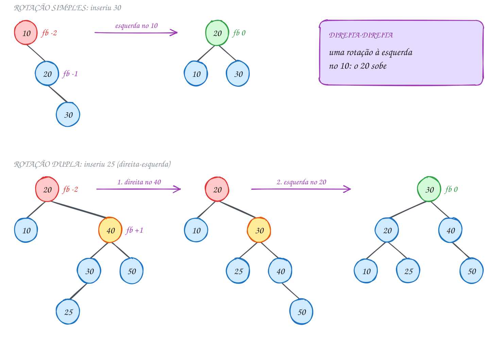
Rotações e rebalanceamento, no avl.c:
static No *rot_esquerda(No *r) {
No *d = r->dir;
r->dir = d->esq; // a subárvore do meio muda de pai
d->esq = r;
atualiza(r); // r agora está embaixo: primeiro ele
atualiza(d);
return d; // d é a nova raiz desta subárvore
}
static No *rebalanceia(No *r) {
atualiza(r);
int fb = avl_fator(r);
if (fb > 1) { // pesado à esquerda
if (avl_fator(r->esq) < 0) { // zigue-zague: dupla
r->esq = rot_esquerda(r->esq);
}
return rot_direita(r);
}
if (fb < -1) { // pesado à direita
if (avl_fator(r->dir) > 0) { // zigue-zague: dupla
r->dir = rot_direita(r->dir);
}
return rot_esquerda(r);
}
return r;
}
A avl_insere é a bst_insere terminando em return rebalanceia(r). O
cliente insere os pedidos e mostra a pré-ordem:
#include <stdio.h>
#include "avl.h"
int main(void) {
int pedidos[] = {10, 20, 30, 40, 50, 25};
No *raiz = NULL;
for (int i = 0; i < 6; i++) {
raiz = avl_insere(raiz, pedidos[i]);
printf("Insere %d: pré", pedidos[i]);
avl_pre_ordem(raiz);
printf(" | altura %d | rotações %d\n", avl_altura(raiz), avl_rotacoes());
}
raiz = avl_libera(raiz);
return 0;
}
// Saída:
// Insere 10: pré 10 | altura 0 | rotações 0
// Insere 20: pré 10 20 | altura 1 | rotações 0
// Insere 30: pré 20 10 30 | altura 1 | rotações 1
// Insere 40: pré 20 10 30 40 | altura 2 | rotações 1
// Insere 50: pré 20 10 40 30 50 | altura 2 | rotações 2
// Insere 25: pré 30 20 10 25 40 50 | altura 2 | rotações 4
O caminho verde é o do nó 20 quando o 25 chega: fator -2, filho direito com fator +1, então duas rotações:
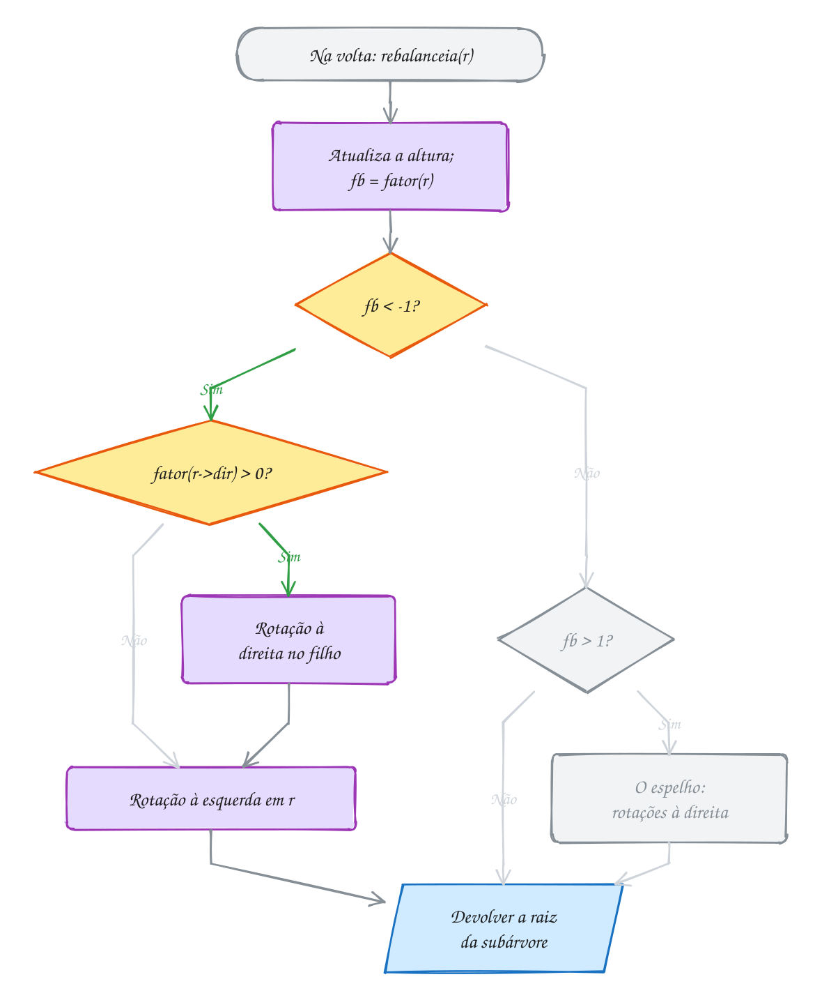
| Insere | Quem fica desequilibrado | Caso | Rotação | Raiz depois |
|---|---|---|---|---|
| 10, 20 | ninguém | 10 | ||
| 30 | 10 (fb -2; filho 20 com -1) | direita-direita | esquerda no 10 | 20 |
| 40 | ninguém (20 fica com -1) | 20 | ||
| 50 | 30 (fb -2; filho 40 com -1) | direita-direita | esquerda no 30 | 20 |
| 25 | 20 (fb -2; filho 40 com +1) | direita-esquerda | direita no 40, esquerda no 20 | 30 |
Sem a AVL, a sequência daria uma BST de altura 4.
Exemplo A201 · Os quatro casos, três chaves cada
#include <stdio.h>
#include "0101-avl.h"
// insere as três chaves numa AVL nova e mostra quantas rotações custou
void testa(const char *caso, int a, int b, int c) {
int antes = avl_rotacoes(); // o contador é um só para o programa todo
No *r = NULL;
r = avl_insere(r, a);
r = avl_insere(r, b);
r = avl_insere(r, c);
printf("%-18s %d %d %d -> pré", caso, a, b, c);
avl_pre_ordem(r);
printf(" | rotações %d\n", avl_rotacoes() - antes);
r = avl_libera(r);
}
int main(void) {
// em linha reta: uma rotação simples resolve
testa("esquerda-esquerda", 30, 20, 10);
testa("direita-direita", 10, 20, 30);
// em zigue-zague: primeiro endireita o filho, depois gira o avô
testa("esquerda-direita", 30, 10, 20);
testa("direita-esquerda", 10, 30, 20);
// nenhum desequilíbrio: o do meio chegou primeiro
testa("nenhum caso", 20, 10, 30);
return 0;
}
// Saída:
// esquerda-esquerda 30 20 10 -> pré 20 10 30 | rotações 1
// direita-direita 10 20 30 -> pré 20 10 30 | rotações 1
// esquerda-direita 30 10 20 -> pré 20 10 30 | rotações 2
// direita-esquerda 10 30 20 -> pré 20 10 30 | rotações 2
// nenhum caso 20 10 30 -> pré 20 10 30 | rotações 0
gcc ~/LPEDC/material/A201.c ~/LPEDC/material/0101-avl.c -o ~/LPEDC/material/A201 && ~/LPEDC/material/A201
Exemplo A202 · Mil pedidos: BST comum contra AVL
#include <stdio.h>
#include <stdlib.h>
#include "0101-avl.h"
// uma BST comum, sem balancear, só para comparar (nomes diferentes do TAD)
typedef struct Comum {
int chave;
struct Comum *esq, *dir;
} Comum;
Comum *comum_insere(Comum *r, int chave) {
if (r == NULL) {
Comum *n = malloc(sizeof(Comum));
if (n == NULL) {
exit(1);
}
n->chave = chave;
n->esq = n->dir = NULL;
return n;
}
if (chave < r->chave) {
r->esq = comum_insere(r->esq, chave);
} else if (chave > r->chave) {
r->dir = comum_insere(r->dir, chave);
}
return r;
}
int comum_altura(const Comum *r) {
if (r == NULL) {
return -1;
}
int he = comum_altura(r->esq);
int hd = comum_altura(r->dir);
return 1 + (he > hd ? he : hd);
}
void comum_libera(Comum *r) {
if (r != NULL) {
comum_libera(r->esq);
comum_libera(r->dir);
free(r);
}
}
int main(void) {
Comum *bst = NULL;
No *avl = NULL;
for (int pedido = 1; pedido <= 1000; pedido++) { // em ordem crescente
bst = comum_insere(bst, pedido);
avl = avl_insere(avl, pedido);
}
printf("BST comum: altura %d\n", comum_altura(bst));
printf("AVL: altura %d, raiz %d, rotações %d\n",
avl_altura(avl), avl->chave, avl_rotacoes());
printf("Busca do pedido 1000: até %d comparações na BST, até %d na AVL\n",
comum_altura(bst) + 1, avl_altura(avl) + 1);
comum_libera(bst);
avl = avl_libera(avl);
return 0;
}
// Saída:
// BST comum: altura 999
// AVL: altura 9, raiz 512, rotações 990
// Busca do pedido 1000: até 1000 comparações na BST, até 10 na AVL
gcc ~/LPEDC/material/A202.c ~/LPEDC/material/0101-avl.c -o ~/LPEDC/material/A202 && ~/LPEDC/material/A202
Exercício E601 · ★☆☆
Monte à mão esta árvore binária, sem campo de altura (struct Arv: chave, esq, dir):
50
├── esq: 30
│ ├── esq: 20
│ │ └── esq: 10
│ └── dir: 40
└── dir: 70
└── dir: 80
└── dir: 90
Escreva altura(r) e relatorio(r). A relatorio mostra, em pré-ordem, a altura e o fator de balanceamento (altura da esquerda menos altura da direita) de cada nó, marca com "<- desequilibrado" quem tem fator fora de -1..1 e devolve quantos nós estão assim. O main diz se a árvore é AVL.
Saída esperada:
50: altura 3, fator 0
30: altura 2, fator 1
20: altura 1, fator 1
10: altura 0, fator 0
40: altura 0, fator 0
70: altura 2, fator -2 <- desequilibrado
80: altura 1, fator -1
90: altura 0, fator 0
É AVL? não
gcc ~/LPEDC/material/E601.c ~/LPEDC/material/0101-avl.c -o ~/LPEDC/material/E601 && ~/LPEDC/material/E601
Exercício E603 · ★★☆
Use o struct Arv do E601 (chave, esq, dir, sem campo de altura). Escreva altura_se_avl(r): devolve a altura da árvore se ela respeitar a regra da AVL em todos os nós, ou -2 se algum nó tiver fator fora de -1..1. Visite cada nó UMA vez só. Teste duas árvores:
Árvore 1: a do E601.
Árvore 2: a mesma, mas com a subárvore direita da raiz trocada por
80 (filhos 70 e 90).
Saída esperada:
Árvore 1: não é AVL
Árvore 2: é AVL, altura 3
gcc ~/LPEDC/material/E603.c ~/LPEDC/material/0101-avl.c -o ~/LPEDC/material/E603 && ~/LPEDC/material/E603
Exercício E604 · ★★☆
Com o TAD avl.h (o struct No tem chave, altura, esq e dir), escreva atualiza_altura(r), gira_direita(r) e gira_esquerda(r). Cada rotação recalcula as duas alturas na ordem certa e devolve a nova raiz. Escreva também no(chave, esq, dir), que cria um nó já com a altura certa. Gire à esquerda duas árvores montadas à mão: t1 = 10 -> dir 20 -> dir 30 e t2 = raiz 40 (esq 20; dir 60 com filhos 50 e 70). Mostre a pré-ordem (avl_pre_ordem) e a altura da raiz.
Saída esperada:
Teste 1: pré 20 10 30 | altura da raiz 1
Teste 2: pré 60 40 20 50 70 | altura da raiz 2
gcc ~/LPEDC/material/E604.c ~/LPEDC/material/0101-avl.c -o ~/LPEDC/material/E604 && ~/LPEDC/material/E604
Exercício E606 · ★★★
Escreva uma AVL (sem o avl.h) que, a cada rotação, imprime qual dos quatro casos aconteceu e em qual nó. Insira estes pedidos, nesta ordem:
30 25 15 45 60 35 20
Pedidos que não causam rotação não imprimem nada. No fim, mostre a em ordem e a pré-ordem.
Saída esperada:
Insere 15: esquerda-esquerda no 30
Insere 60: direita-direita no 30
Insere 35: direita-esquerda no 25
Insere 20: esquerda-direita no 25
Em ordem: 15 20 25 30 35 45 60
Pré-ordem: 30 20 15 25 45 35 60
gcc ~/LPEDC/material/E606.c ~/LPEDC/material/0101-avl.c -o ~/LPEDC/material/E606 && ~/LPEDC/material/E606
No pronto-socorro, o próximo atendido é o mais grave de quem espera, e não o primeiro a chegar. A fila do 0085 não serve, porque atende por ordem de chegada. O que o pronto-socorro precisa é de uma estrutura em que cada item entra com uma prioridade e sai sempre o de maior prioridade. Essa estrutura é a fila de prioridade (CORMEN et al., 2024, cap. 6).
As estruturas que você já conhece fazem metade do serviço. Num vetor solto, inserir é O(1), basta pôr no fim, mas achar o máximo exige olhar todos, O(n). Num vetor ordenado, tirar o máximo é O(1), mas inserir exige abrir espaço no lugar certo, O(n). Uma BST faz as duas em O(log n) só se estiver equilibrada, e para isso precisa da AVL do 0101, com ponteiros e rotações.
| Onde guardar | Inserir | Tirar o máximo |
|---|---|---|
| vetor solto | O(1) | O(n) |
| vetor ordenado | O(n) | O(1) |
| heap | O(log n) | O(log n) |
O heap de máximo faz as duas em O(log n), sempre, e sem um único ponteiro. Ele é uma árvore binária com duas regras (CORMEN et al., 2024, cap. 6). A regra de forma diz que a árvore é completa: todos os níveis estão cheios, menos talvez o último, que se enche da esquerda para a direita, sem pular vaga. A regra de ordem diz que todo pai é maior ou igual aos seus filhos. Seguindo a regra de pai em pai, o máximo de todos fica na raiz.
Compare com a regra da BST. Na BST, a esquerda é menor e a direita é maior; no heap, esquerda e direita não se comparam, e o 30 pode estar à esquerda do 70 ou à direita dele. A regra é mais fraca, e por isso mais barata de manter, mas o heap só responde uma pergunta: "quem é o maior?" (TENENBAUM; LANGSAM; AUGENSTEIN, 1995, cap. 6). Ele não serve para buscar uma chave qualquer.
A regra de forma é o que dispensa os ponteiros. Como a árvore completa não
tem buracos, você pode guardá-la num vetor, nível por nível, da esquerda
para a direita (FEOFILOFF, 2009). A raiz fica em v[0], os dois nós do nível
1 em v[1] e v[2], os quatro do nível 2 de v[3] a v[6], e assim por
diante. Os parentescos viram contas com o índice. O Cormen numera o vetor a
partir de 1, e as contas mudam:
| Quem | Índice com v[0] na raiz |
No Cormen (A[1..n]) |
|---|---|---|
pai de i |
(i - 1) / 2 (divisão inteira) |
⌊i/2⌋ |
| filho esquerdo | 2 * i + 1 |
2i |
| filho direito | 2 * i + 2 |
2i + 1 |
As duas operações quebram uma regra por um instante e consertam por um único
caminho. Para inserir, o item novo entra no fim do vetor, o que mantém a
forma, e sobe: troca de lugar com o pai enquanto for maior que ele. Para
remover o máximo, a raiz sai, o último elemento do vetor vai para o lugar
dela e desce: troca com o maior dos dois filhos enquanto for menor que
algum deles. Cada operação anda no máximo a altura da árvore, ⌊log₂ n⌋
trocas, e daí o O(log n). No Cormen, a descida se chama MAX-HEAPIFY
(CORMEN et al., 2024, cap. 6).
Invertendo as comparações, você tem o heap de mínimo, com o menor na
raiz, útil quando a prioridade é "quem tem o menor valor", como o pedido com
o menor prazo (FEOFILOFF, 2009). Um cuidado com o nome: este heap, a
estrutura de dados, não tem nada a ver com o heap do malloc, a região de
memória do assunto 0053. São dois usos da mesma palavra.
[!WARNING] Na descida, troque com o maior dos filhos; trocar com o menor quebra o heap. Confira
f + 1 < h->nantes de lerv[f + 1], e numa questão veja em que índice o vetor começa.
No pronto-socorro, chegam pacientes com gravidade 40, 70, 20, 90, 50 e 30. O
heap fica [90 70 30 40 50 20]. O 70 está no índice 1, e os filhos dele, nos
índices 3 e 4:
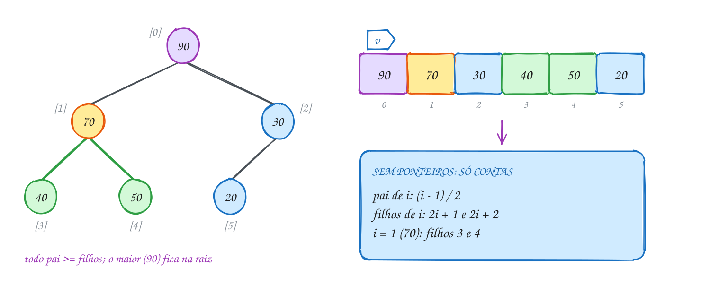
O TAD guarda o vetor, quantos elementos tem e quantos cabem. As duas peças do
heap.c:
// o elemento em i sobe enquanto for maior que o pai
static void sobe(Heap *h, int i) {
while (i > 0 && h->v[(i - 1) / 2] < h->v[i]) {
troca(&h->v[(i - 1) / 2], &h->v[i]);
i = (i - 1) / 2;
}
}
// o elemento em i desce, trocando com o MAIOR dos filhos
static void desce(Heap *h, int i) {
while (2 * i + 1 < h->n) {
int f = 2 * i + 1; // filho esquerdo
if (f + 1 < h->n && h->v[f + 1] > h->v[f]) {
f++; // o direito é maior
}
if (h->v[i] >= h->v[f]) {
break; // já está no lugar
}
troca(&h->v[i], &h->v[f]);
i = f;
}
}
O cliente só vê heap_insere e heap_remove:
#include <stdio.h>
#include "heap.h"
int main(void) {
// gravidade de cada paciente, na ordem em que chegaram (maior = mais urgente)
int chegada[] = {40, 70, 20, 90, 50, 30};
Heap *fila = heap_cria(10);
for (int i = 0; i < 6; i++) {
heap_insere(fila, chegada[i]);
printf("Chega %d: ", chegada[i]);
heap_mostra(fila);
printf("\n");
}
for (int i = 0; i < 2; i++) {
int atendido = heap_remove(fila);
printf("Atende %d: ", atendido);
heap_mostra(fila);
printf("\n");
}
heap_libera(fila);
return 0;
}
// Saída:
// Chega 40: [40]
// Chega 70: [70 40]
// Chega 20: [70 40 20]
// Chega 90: [90 70 20 40]
// Chega 50: [90 70 20 40 50]
// Chega 30: [90 70 30 40 50 20]
// Atende 90: [70 50 30 40 20]
// Atende 70: [50 40 30 20]
O fluxograma segue a subida do 30: entra no índice 5, o pai (índice 2) é o 20, menor, e eles trocam. O novo pai é o 90, e a subida para:
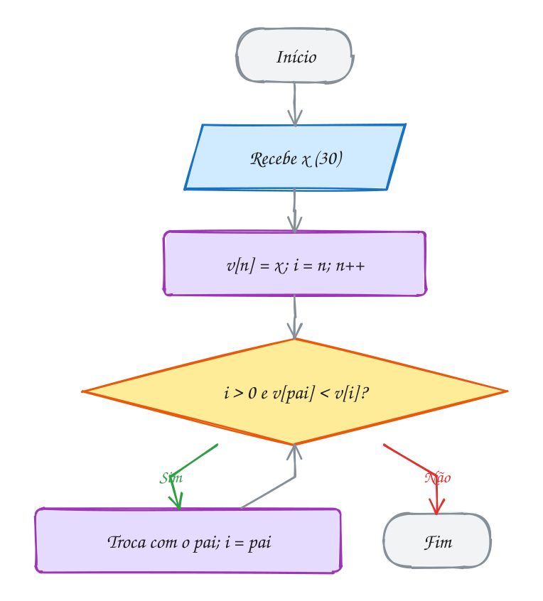
A remoção do 90. O último (20) vai para a raiz e desce pelo filho maior:
| Passo | Vetor | i |
Filhos de i |
Maior filho | Troca? |
|---|---|---|---|---|---|
tira o 90, o 20 vai para v[0] |
[20 70 30 40 50] |
0 | 70, 30 | 70 (índice 1) | sim |
[70 20 30 40 50] |
1 | 40, 50 | 50 (índice 4) | sim | |
[70 50 30 40 20] |
4 | (nenhum) | para |
Exemplo A203 · O leilão com vagas contadas
#include <stdio.h>
#include "0102-heap.h"
int main(void) {
// lances (em R$) por uma bicicleta usada; o leiloeiro só anota 4
int lances[] = {300, 450, 450, 200, 500};
Heap *mesa = heap_cria(4);
for (int i = 0; i < 5; i++) {
// heap_insere avisa quando não cabe: o vetor tem tamanho fixo, e o
// heap recusa até o maior lance de todos
if (heap_insere(mesa, lances[i])) {
printf("Lance R$ %d anotado: ", lances[i]);
} else {
printf("Lance R$ %d recusado, mesa cheia: ", lances[i]);
}
heap_mostra(mesa);
printf("\n");
}
// olhar o topo não tira ninguém
printf("Maior lance agora: R$ %d\n", heap_topo(mesa));
printf("Olhei de novo: R$ %d\n", heap_topo(mesa));
// empate: os dois 450 continuam lá, um depois do outro
while (!heap_vazio(mesa)) {
printf("Sai R$ %d\n", heap_remove(mesa));
}
heap_libera(mesa);
return 0;
}
// Saída:
// Lance R$ 300 anotado: [300]
// Lance R$ 450 anotado: [450 300]
// Lance R$ 450 anotado: [450 300 450]
// Lance R$ 200 anotado: [450 300 450 200]
// Lance R$ 500 recusado, mesa cheia: [450 300 450 200]
// Maior lance agora: R$ 450
// Olhei de novo: R$ 450
// Sai R$ 450
// Sai R$ 450
// Sai R$ 300
// Sai R$ 200
gcc ~/LPEDC/material/A203.c ~/LPEDC/material/0102-heap.c -o ~/LPEDC/material/A203 && ~/LPEDC/material/A203
Exemplo A204 · Fila de prioridade com nome
#include <stdio.h>
#define CAP 8
// um heap de structs: a prioridade decide, o nome vai junto
typedef struct {
int gravidade;
const char *nome;
} Paciente;
typedef struct {
Paciente v[CAP];
int n;
} Triagem;
void troca(Paciente *a, Paciente *b) {
Paciente t = *a; // struct inteira copiada de uma vez
*a = *b;
*b = t;
}
void chega(Triagem *t, int gravidade, const char *nome) {
int i = t->n++;
t->v[i] = (Paciente){gravidade, nome};
while (i > 0 && t->v[(i - 1) / 2].gravidade < t->v[i].gravidade) {
troca(&t->v[(i - 1) / 2], &t->v[i]);
i = (i - 1) / 2;
}
}
Paciente atende(Triagem *t) {
Paciente primeiro = t->v[0];
t->v[0] = t->v[--t->n];
int i = 0;
while (2 * i + 1 < t->n) {
int f = 2 * i + 1;
if (f + 1 < t->n && t->v[f + 1].gravidade > t->v[f].gravidade) {
f++;
}
if (t->v[i].gravidade >= t->v[f].gravidade) {
break;
}
troca(&t->v[i], &t->v[f]);
i = f;
}
return primeiro;
}
int main(void) {
Triagem t = {.n = 0};
chega(&t, 40, "Ana (febre)");
chega(&t, 70, "Bruno (fratura)");
chega(&t, 20, "Carla (receita)");
chega(&t, 90, "Davi (infarto)");
chega(&t, 50, "Eva (corte)");
while (t.n > 0) {
Paciente p = atende(&t);
printf("%2d %s\n", p.gravidade, p.nome);
}
return 0;
}
// Saída:
// 90 Davi (infarto)
// 70 Bruno (fratura)
// 50 Eva (corte)
// 40 Ana (febre)
// 20 Carla (receita)
gcc ~/LPEDC/material/A204.c ~/LPEDC/material/0102-heap.c -o ~/LPEDC/material/A204 && ~/LPEDC/material/A204
Exercício E607 · ★☆☆
No heap, a árvore mora no vetor: os filhos de i estão em 2i + 1 e 2i + 2. Escreva mostra_filhos(v, n), que, para cada posição, mostra o valor e quem são os filhos (só os que existem, com índice menor que n). Teste com o heap da triagem {90, 70, 30, 40, 50, 20}.
Saída esperada:
v[0] = 90: filhos 70 e 30
v[1] = 70: filhos 40 e 50
v[2] = 30: filho 20
v[3] = 40: folha
v[4] = 50: folha
v[5] = 20: folha
gcc ~/LPEDC/material/E607.c ~/LPEDC/material/0102-heap.c -o ~/LPEDC/material/E607 && ~/LPEDC/material/E607
Exercício E609 · ★★☆
Na fila de prioridade, é comum tirar o máximo e logo colocar um valor novo. Escreva troca_topo(h, x), que faz isso numa operação só: guarda o máximo, põe x na raiz (v[0]), faz x descer até o lugar certo e devolve o máximo antigo. Suponha o heap não vazio. O TAD heap.h deixa os campos v e n à mostra, mas a função desce do heap.c é static: escreva a sua. Insira 15, 35, 25, 45 e 5, mostre o heap com heap_mostra e troque o topo por 40 e depois por 10.
Saída esperada:
depois das 5 inserções: [45 35 25 15 5]
saiu 45, entrou 40: [40 35 25 15 5]
saiu 40, entrou 10: [35 15 25 10 5]
gcc ~/LPEDC/material/E609.c ~/LPEDC/material/0102-heap.c -o ~/LPEDC/material/E609 && ~/LPEDC/material/E609
Exercício E610 · ★★☆
No banco, a fila é por senha: a MENOR senha é chamada primeiro. Você só tem o TAD heap.h, que é um heap de MÁXIMO, e não pode mexer nele. As senhas foram entregues nesta ordem: 7, 3, 9, 1, 5. Escreva o main para chamar as senhas na ordem certa.
Saída esperada:
Chamando senha 1
Chamando senha 3
Chamando senha 5
Chamando senha 7
Chamando senha 9
gcc ~/LPEDC/material/E610.c ~/LPEDC/material/0102-heap.c -o ~/LPEDC/material/E610 && ~/LPEDC/material/E610
Exercício E611 · ★★★
O professor quer o pódio: as 3 maiores notas da turma. Em vez de ordenar o vetor inteiro, use um heap de MÍNIMO com espaço para 3, que guarda as 3 maiores vistas até agora, com a menor delas na raiz. Para cada nota: se o heap tem menos de 3, insira; senão, se a nota é maior que a raiz, a raiz sai e a nota entra. Escreva o heap por conta própria (o heap.h é de máximo). Notas: 72 95 60 88 91 45 98 83 77 90 66 85.
Saída esperada:
Pódio: 98 95 91
gcc ~/LPEDC/material/E611.c ~/LPEDC/material/0102-heap.c -o ~/LPEDC/material/E611 && ~/LPEDC/material/E611
Os tempos da corrida de rua, em minutos, chegaram nesta ordem: 52, 18, 73, 40, 91, 25 e 66. Você quer o ranking em ordem crescente, no próprio vetor, sem alocar outro, e com O(n log n) garantido. O merge sort (0094) garante o tempo, mas pede um rascunho; o quick sort (0095) dispensa o rascunho, mas pode cair em O(n²). O heap do 0102 resolve as duas exigências de uma vez.
A ideia parte de uma observação. O heap entrega o maior elemento em O(log n). Se você tirar os n elementos um a um, eles saem do maior para o menor, já em ordem. Esse é o heapsort: ordenar tirando o máximo do heap n vezes (CORMEN et al., 2024, cap. 6). O truque que dispensa o segundo vetor é este: a cada máximo que sai, o heap encolhe uma casa, e a casa que ficou livre no fim do vetor é exatamente a posição final daquele máximo. O heap e a parte ordenada dividem o mesmo vetor.
O método tem duas fases. A fase 1 constrói o heap dentro do vetor
bagunçado. Inserir um elemento por vez funcionaria, mas há um jeito mais
barato: fazer cada pai descer, como na remoção do 0102, começando pelo
último pai, no índice n / 2 - 1, e voltando até a raiz. As folhas, que são
a metade final do vetor, já são heaps de um elemento só e não precisam de
nada. Como a maioria dos nós está nos níveis de baixo e desce pouco, a fase
inteira custa só O(n). No Cormen ela se chama BUILD-MAX-HEAP (CORMEN et
al., 2024, cap. 6). Nos tempos da corrida, os pais são os índices 2, 1 e 0, e
o vetor vira o heap [91 52 73 40 18 25 66].
A fase 2 ordena. Você troca a raiz, que é o máximo, com o último elemento do heap; o máximo cai no lugar definitivo. Depois encolhe o heap em uma casa, para que ele deixe de enxergar esse máximo, e faz a nova raiz descer para consertar a ordem. Repete até restar um elemento. Durante essa fase, o vetor tem o heap no começo e a parte ordenada no fim, e a fronteira anda uma casa para a esquerda a cada volta (FEOFILOFF, 2009). Na primeira volta, o 91 troca com o 66 e fica no fim; o 66 desce pelo maior filho, o 73.
O custo sai das duas fases. A fase 1 é O(n). A fase 2 faz n - 1 descidas, e cada uma desce no máximo log₂ n níveis. O total é O(n log n) em todos os casos, porque nenhuma entrada força o heap a ficar mais alto (TENENBAUM; LANGSAM; AUGENSTEIN, 1995, cap. 6). É a garantia do merge sort sem o rascunho do merge sort.
Duas propriedades completam o retrato. O heapsort é in-place: usa O(1)
de memória extra e nem precisa de recursão, porque a descida é um laço. E
não é estável (o termo está no 0092): as trocas entre a raiz e o fim do
vetor atravessam longas distâncias e podem inverter chaves iguais. Mesmo com
a garantia, na prática o quick sort costuma ser mais rápido, porque acessa
posições vizinhas da memória e aproveita melhor o cache do processador,
enquanto o heapsort salta de i para 2 * i + 1 (TENENBAUM; LANGSAM;
AUGENSTEIN, 1995, cap. 6).
[!WARNING] Na fase 2, o
descerecebe o tamanho do heap (fim), não o do vetor (n). Comdesce(v, n, 0), a raiz trata os já ordenados como filhos e desfaz o trabalho, sem aviso: os índices continuam válidos.
Os tempos da corrida de rua chegaram como 52, 18, 73, 40, 91, 25 e 66. Depois
da fase 1, o heap é [91 52 73 40 18 25 66]. O 91 troca com o 66 e fica no
fim, em verde; o 66 desce pelo maior filho (73):
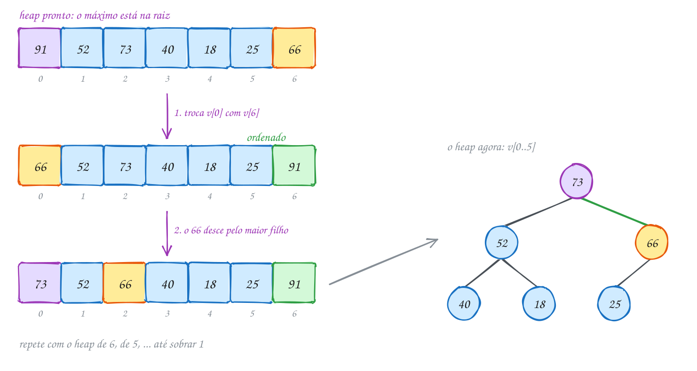
O desce é o do heap, com o tamanho atual do heap como parâmetro. A mostra
separa o heap da parte ordenada com |:
#include <stdio.h>
void troca(int *a, int *b) {
int t = *a;
*a = *b;
*b = t;
}
// mostra o heap (v[0..fim-1]) e a parte já ordenada, separados por |
void mostra(const char *rotulo, const int v[], int n, int fim) {
printf("%-12s", rotulo);
for (int i = 0; i < n; i++) {
printf(i == fim ? " | %d" : " %d", v[i]);
}
printf("\n");
}
// desce v[i] dentro do heap v[0..n-1], trocando com o maior filho
void desce(int v[], int n, int i) {
while (2 * i + 1 < n) {
int f = 2 * i + 1;
if (f + 1 < n && v[f + 1] > v[f]) {
f++;
}
if (v[i] >= v[f]) {
break;
}
troca(&v[i], &v[f]);
i = f;
}
}
void heapsort(int v[], int n) {
// fase 1: transforma o vetor em heap, do último pai até a raiz
for (int i = n / 2 - 1; i >= 0; i--) {
desce(v, n, i);
}
mostra("heap:", v, n, n);
// fase 2: o máximo vai para o fim; o heap encolhe uma casa
for (int fim = n - 1; fim > 0; fim--) {
troca(&v[0], &v[fim]);
desce(v, fim, 0);
mostra("", v, n, fim);
}
}
int main(void) {
int tempos[] = {52, 18, 73, 40, 91, 25, 66}; // minutos de cada corredor
int n = 7;
mostra("antes:", tempos, n, n);
heapsort(tempos, n);
return 0;
}
// Saída:
// antes: 52 18 73 40 91 25 66
// heap: 91 52 73 40 18 25 66
// 73 52 66 40 18 25 | 91
// 66 52 25 40 18 | 73 91
// 52 40 25 18 | 66 73 91
// 40 18 25 | 52 66 73 91
// 25 18 | 40 52 66 73 91
// 18 | 25 40 52 66 73 91
No fluxograma, a fase 1 é uma caixa só, e o laço da fase 2 repete trocar e
descer até fim chegar a 0:
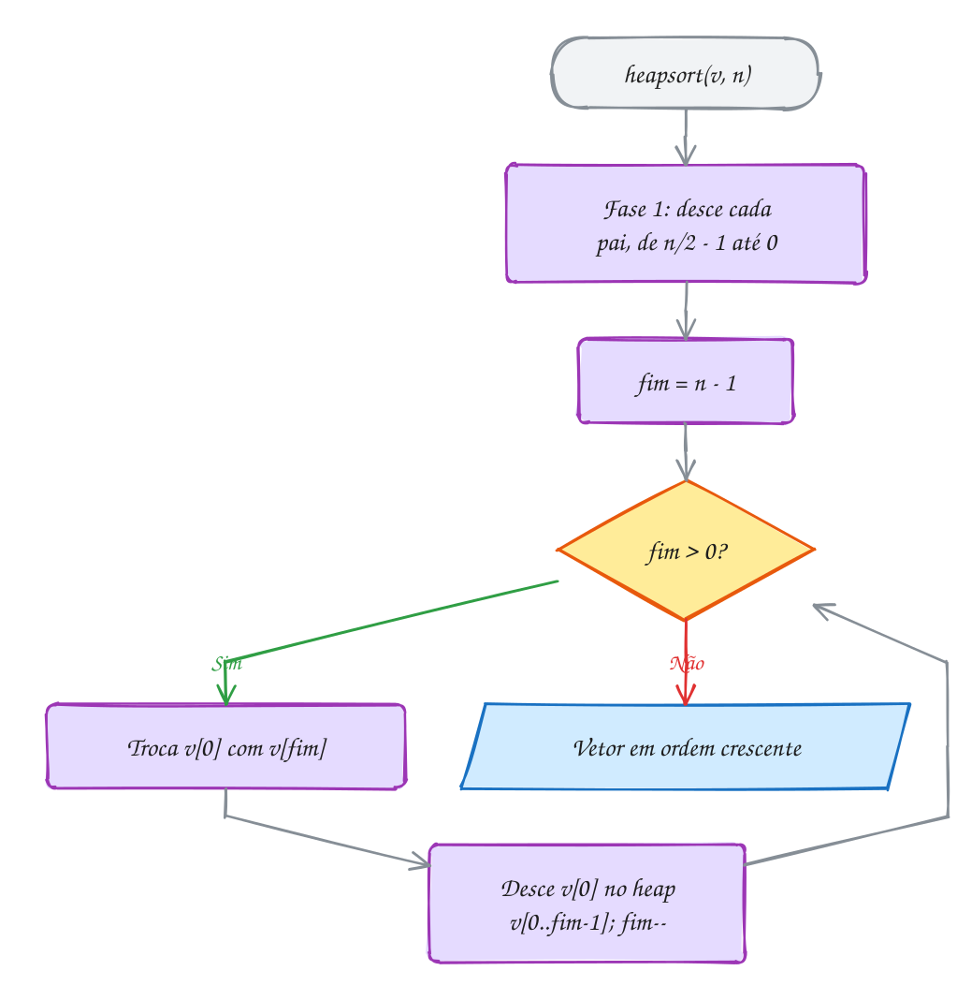
A fase 1. Os pais são os índices 2, 1 e 0 (n / 2 - 1 = 2):
| Pai que desce | Filhos | O que acontece | Vetor |
|---|---|---|---|
v[2] = 73 |
25 e 66 | 73 já é o maior: fica | 52 18 73 40 91 25 66 |
v[1] = 18 |
40 e 91 | troca com o 91 | 52 91 73 40 18 25 66 |
v[0] = 52 |
91 e 73 | troca com o 91; depois, filhos 40 e 18: fica | 91 52 73 40 18 25 66 |
Exemplo A205 · Empate na chegada: o heapsort não é estável
#include <stdio.h>
typedef struct {
const char *nome;
int tempo; // minutos
} Corredor;
void troca(Corredor *a, Corredor *b) {
Corredor t = *a;
*a = *b;
*b = t;
}
// o mesmo desce do texto, comparando só o campo tempo
void desce(Corredor v[], int n, int i) {
while (2 * i + 1 < n) {
int f = 2 * i + 1;
if (f + 1 < n && v[f + 1].tempo > v[f].tempo) {
f++;
}
if (v[i].tempo >= v[f].tempo) {
break;
}
troca(&v[i], &v[f]);
i = f;
}
}
void heapsort(Corredor v[], int n) {
for (int i = n / 2 - 1; i >= 0; i--) {
desce(v, n, i);
}
for (int fim = n - 1; fim > 0; fim--) {
troca(&v[0], &v[fim]);
desce(v, fim, 0);
}
}
void mostra(const char *rotulo, const Corredor v[], int n) {
printf("%s", rotulo);
for (int i = 0; i < n; i++) {
printf(" %s %d", v[i].nome, v[i].tempo);
printf(i < n - 1 ? "," : "\n");
}
}
int main(void) {
// na ordem de chegada: Ana chegou antes de Caio, Bia antes de Duda
Corredor v[] = {{"Ana", 40}, {"Bia", 25}, {"Caio", 40}, {"Duda", 25}, {"Edu", 30}};
int n = 5;
mostra("Chegada:", v, n);
heapsort(v, n);
mostra("Ordem: ", v, n);
// os tempos estão em ordem, mas os empatados trocaram de lugar:
// Duda passou na frente de Bia e Caio na frente de Ana
return 0;
}
// Saída:
// Chegada: Ana 40, Bia 25, Caio 40, Duda 25, Edu 30
// Ordem: Duda 25, Bia 25, Edu 30, Caio 40, Ana 40
gcc ~/LPEDC/material/A205.c -o ~/LPEDC/material/A205 && ~/LPEDC/material/A205
Exemplo A206 · Heapsort não tem dia ruim
#include <stdio.h>
#include <stdlib.h>
long comparacoes = 0; // contador global, só para o experimento
void troca(int *a, int *b) {
int t = *a;
*a = *b;
*b = t;
}
void desce(int v[], int n, int i) {
while (2 * i + 1 < n) {
int f = 2 * i + 1;
if (f + 1 < n) {
comparacoes++;
if (v[f + 1] > v[f]) {
f++;
}
}
comparacoes++;
if (v[i] >= v[f]) {
break;
}
troca(&v[i], &v[f]);
i = f;
}
}
void heapsort(int v[], int n) {
for (int i = n / 2 - 1; i >= 0; i--) {
desce(v, n, i);
}
for (int fim = n - 1; fim > 0; fim--) {
troca(&v[0], &v[fim]);
desce(v, fim, 0);
}
}
void insertion(int v[], int n) {
for (int i = 1; i < n; i++) {
int x = v[i];
int j = i - 1;
while (j >= 0) {
comparacoes++;
if (v[j] <= x) {
break;
}
v[j + 1] = v[j]; // empurra para a direita
j--;
}
v[j + 1] = x;
}
}
int main(void) {
int n = 1000;
int *a = malloc(n * sizeof(int));
int *b = malloc(n * sizeof(int));
if (a == NULL || b == NULL) {
return 1;
}
for (int i = 0; i < n; i++) {
a[i] = b[i] = n - i; // decrescente: o pior caso do insertion sort
}
comparacoes = 0;
insertion(a, n);
printf("Insertion sort: %ld comparações\n", comparacoes);
comparacoes = 0;
heapsort(b, n);
printf("Heapsort: %ld comparações\n", comparacoes);
printf("Ordenados? %s\n", a[0] == 1 && a[n - 1] == n && b[0] == 1 && b[n - 1] == n ? "sim" : "não");
free(a);
free(b);
return 0;
}
// Saída:
// Insertion sort: 499500 comparações
// Heapsort: 15965 comparações
// Ordenados? sim
gcc ~/LPEDC/material/A206.c -o ~/LPEDC/material/A206 && ~/LPEDC/material/A206
Exercício E613 · ★☆☆
Escreva troca, desce(v, n, i) (heap de máximo) e mostra(v, n, fim). No vetor {3, 9, 2, 7, 5, 8}, faça a fase 1 do heapsort (descer cada pai, do último até a raiz), mostrando o vetor depois de cada pai descer. Depois faça só os DOIS primeiros passos da fase 2 (o máximo vai para o fim e o heap encolhe uma casa). Mostre o vetor entre colchetes; nos passos da fase 2, uma barra separa a parte já ordenada.
Saída esperada:
pai 2 desceu: [3 9 8 7 5 2]
pai 1 desceu: [3 9 8 7 5 2]
pai 0 desceu: [9 7 8 3 5 2]
fase 2: [8 7 2 3 5 | 9]
fase 2: [7 5 2 3 | 8 9]
Exercício E615 · ★★☆
Há dois jeitos de montar o heap da fase 1: inserir os elementos um a um (cada um SOBE, como no heap_insere) ou descer cada pai, do último até a raiz (o jeito do texto). Escreva as duas funções, contando as trocas, e rode nos tempos da corrida {52, 18, 73, 40, 91, 25, 66}, cada uma numa cópia do vetor. Escreva também eh_heap(v, n) e confira se os dois resultados são heaps de máximo, mesmo sendo diferentes.
Saída esperada:
Por inserções: [91 73 66 18 40 25 52], 5 trocas
Descendo os pais: [91 52 73 40 18 25 66], 2 trocas
Os dois são heaps? sim
Exercício E616 · ★★☆
O heapsort percebe quando o vetor já vem arrumado? Meça. Escreva um heapsort em que desce(v, n, i) devolve quantas trocas fez, e testa(nome, v, n), que soma as trocas do desce em cada fase (a troca do v[0] com o v[fim] da fase 2 não entra na conta) e mostra os totais e o vetor final. Teste um vetor crescente, um decrescente e um com tudo igual: {1..7}, {7..1} e {5, 5, 5, 5, 5, 5, 5}.
Saída esperada:
crescente: fase 1: 4 trocas, fase 2: 6 trocas -> 1 2 3 4 5 6 7
decrescente: fase 1: 0 trocas, fase 2: 5 trocas -> 1 2 3 4 5 6 7
iguais: fase 1: 0 trocas, fase 2: 0 trocas -> 5 5 5 5 5 5 5
Exercício E618 · ★★★
A organização da corrida quer os inscritos em ordem alfabética. Escreva um heapsort para um vetor de strings (const char *), comparando com strcmp, e ordene: Paula, Bruno, Zeca, Ana, Marcos, Carla, Igor, Beatriz.
Saída esperada:
Ana
Beatriz
Bruno
Carla
Igor
Marcos
Paula
Zeca
A academia quer largar a planilha. O sistema novo precisa achar um aluno pela matrícula, cadastrar, cancelar e mostrar, no fim do mês, o pódio de quem mais treinou. São dois pedidos de natureza diferente: três operações que olham a matrícula e uma que olha os treinos. Este assunto mostra como as estruturas do módulo dividem esse trabalho, cada uma no papel em que é boa.
Achar, cadastrar e cancelar pela matrícula é trabalho de BST (0099 e 0100): as três operações descem um caminho e custam O(altura). O pódio pede "os maiores" por outro critério, os treinos, e a BST não ajuda, porque está ordenada pela matrícula. Para "quem é o maior?" existe o heap do 0102 (CORMEN et al., 2024, caps. 6 e 12). Nenhuma das duas faz bem o serviço da outra, e o sistema usa as duas.
Até aqui, cada nó guardava um int. Agora o nó guarda um registro, uma
struct com matrícula, nome e treinos. Uma parte do registro é a chave,
o campo que decide a posição na árvore; aqui, a matrícula. O resto viaja
junto, sem influenciar nada (KERNIGHAN; RITCHIE, 1989, seção 6.5). As funções
são as mesmas da BST, só que comparam r->a.matricula onde antes
comparavam r->chave. Na remoção com dois filhos, a cópia do sucessor passa
a copiar a struct inteira, e não só a chave.
A busca pode devolver um ponteiro para o registro que está dentro da árvore. Com ele, quem chama soma um treino ao aluno sem remover e reinserir nada. O cuidado é o que se pode mudar por esse ponteiro: os campos comuns, como os treinos, sim; a chave, nunca. Mudar a matrícula deixaria o nó num lugar que a regra da BST não permite, e as buscas seguintes passariam a errar (CELES; RANGEL, 2002).
Para o pódio, a árvore não pode ser reordenada pelos treinos sem deixar de ser uma BST de matrículas. A saída é copiar: um percurso em ordem joga os alunos num vetor, e sobre esse vetor você monta um heap de máximo pelos treinos, com a fase 1 do heapsort (0103), em O(n). Depois tira o máximo três vezes. É a fase 2 do heapsort interrompida no terceiro passo. Para achar os k maiores, você não precisa ordenar o vetor inteiro: o custo é O(n) da construção mais k descidas de O(log n) (TENENBAUM; LANGSAM; AUGENSTEIN, 1995, cap. 6).
Se cada registro fosse grande, com endereço, histórico e foto, cada troca do
heap copiaria a struct inteira. Nesse caso, o heap guarda ponteiros
para os registros, um vetor Aluno *v[], e as trocas movem só os ponteiros,
de 8 bytes cada (CELES; CERQUEIRA; RANGEL, 2016). O exercício E618 pede essa
versão.
[!WARNING] O ponteiro de
cad_buscaaponta para dentro de um nó e vale só até a próxima remoção:cad_removepode liberar esse nó ou copiar outro aluno por cima dele. Busque de novo depois de mexer na árvore e nunca alterea->matricula.
A academia troca a planilha por um cadastro em BST, com a matrícula como chave. A catraca acha o 60 (Fabio) descendo 50, 70 e 60 e soma um treino. O 30 (Bruno) cancela, e um heap pelos treinos entrega o pódio:
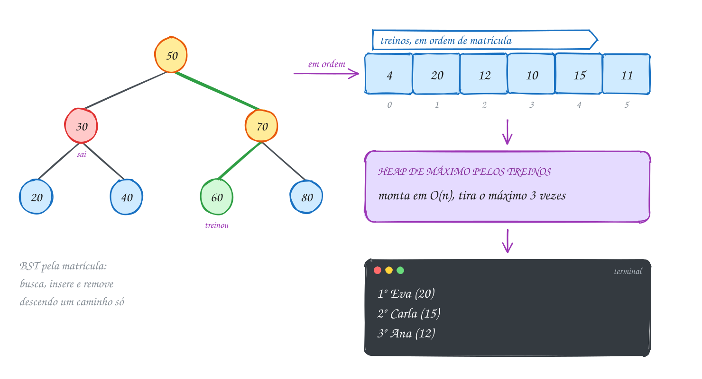
O nó do TAD (cadastro.h e cadastro.c) guarda a struct do aluno:
typedef struct {
int matricula;
char nome[20];
int treinos; // treinos no mês
} Aluno;
typedef struct NoAluno {
Aluno a;
struct NoAluno *esq;
struct NoAluno *dir;
} NoAluno;
As funções são as da BST (cad_insere, cad_busca, cad_remove,
cad_lista), com r->a.matricula no lugar de r->chave. Na remoção com dois
filhos, r->a = suc->a copia a struct inteira do sucessor. O ranking copia os
alunos para um vetor (cad_para_vetor, em ordem) e monta o heap sobre ele:
#include <stdio.h>
#include "cadastro.h"
#define MAX 16
// heap de máximo pelos treinos, para o ranking
void desce(Aluno v[], int n, int i) {
while (2 * i + 1 < n) {
int f = 2 * i + 1;
if (f + 1 < n && v[f + 1].treinos > v[f].treinos) {
f++;
}
if (v[i].treinos >= v[f].treinos) {
break;
}
Aluno t = v[i];
v[i] = v[f];
v[f] = t;
i = f;
}
}
// mostra os k que mais treinaram: monta o heap e tira o máximo k vezes
void ranking(const NoAluno *r, int k) {
Aluno v[MAX];
int n = cad_para_vetor(r, v, 0); // cópia: a árvore não muda
for (int i = n / 2 - 1; i >= 0; i--) {
desce(v, n, i);
}
for (int pos = 1; pos <= k && n > 0; pos++) {
printf(" %dº %s (%d)\n", pos, v[0].nome, v[0].treinos);
v[0] = v[--n];
desce(v, n, 0);
}
}
int main(void) {
Aluno turma[] = {
{50, "Ana", 12}, {30, "Bruno", 8}, {70, "Carla", 15}, {20, "Davi", 4},
{40, "Eva", 20}, {60, "Fabio", 9}, {80, "Gil", 11},
};
NoAluno *cad = NULL;
for (int i = 0; i < 7; i++) {
cad = cad_insere(cad, turma[i]);
}
printf("Alunos (%d, altura %d):\n", cad_conta(cad), cad_altura(cad));
cad_lista(cad);
Aluno *a = cad_busca(cad, 60); // a catraca registra mais um treino
if (a != NULL) {
a->treinos++;
printf("Catraca: %s agora tem %d treinos\n", a->nome, a->treinos);
}
cad = cad_remove(cad, 30); // Bruno cancelou
printf("Sem o 30: %d alunos\n", cad_conta(cad));
printf("Ranking do mês:\n");
ranking(cad, 3);
cad = cad_libera(cad);
return 0;
}
// Saída:
// Alunos (7, altura 2):
// 20 Davi 4 treinos
// 30 Bruno 8 treinos
// 40 Eva 20 treinos
// 50 Ana 12 treinos
// 60 Fabio 9 treinos
// 70 Carla 15 treinos
// 80 Gil 11 treinos
// Catraca: Fabio agora tem 10 treinos
// Sem o 30: 6 alunos
// Ranking do mês:
// 1º Eva (20)
// 2º Carla (15)
// 3º Ana (12)
O exemplo A208 comanda o cadastro pelo teclado (i 50 Ana 12, b 50,
r 50, l). O fluxograma é uma sequência de operações na BST e, no fim, um
laço sobre o heap:
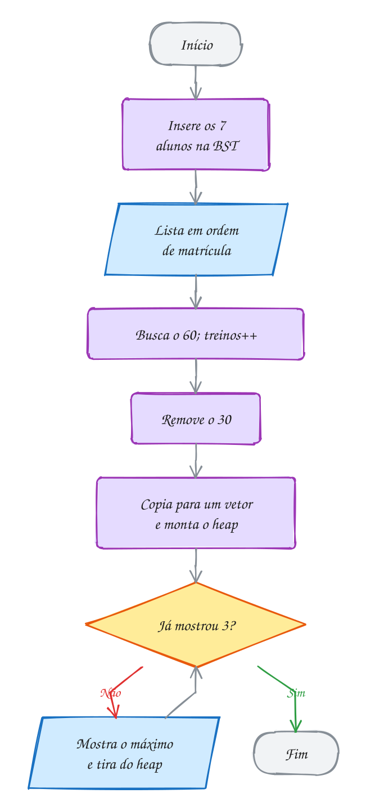
Exemplo A207 · Trocar a matrícula não é editar o campo
#include <stdio.h>
#include "0104-cadastro.h"
void confere(NoAluno *cad, int matricula) {
Aluno *a = cad_busca(cad, matricula);
printf(" busca %d: %s\n", matricula, a != NULL ? a->nome : "não achou");
}
int main(void) {
Aluno turma[] = {
{45, "Lia", 10}, {25, "Rui", 6}, {65, "Teo", 14}, {15, "Ivo", 3}, {35, "Mel", 8},
};
NoAluno *cad = NULL;
for (int i = 0; i < 5; i++) {
cad = cad_insere(cad, turma[i]);
}
// Ivo ganhou a matrícula 90. Jeito ERRADO: mudar o campo pelo ponteiro
Aluno *ivo = cad_busca(cad, 15);
ivo->matricula = 90;
printf("Editando o campo:\n");
cad_lista(cad); // o 90 aparece no começo: está no lugar do 15
confere(cad, 90); // a busca vai para a direita e nunca o encontra
ivo->matricula = 15; // desfaz, para seguir com a árvore certa
// jeito CERTO: copia o aluno, remove pela chave velha, insere com a nova
Aluno copia = *cad_busca(cad, 15); // copia antes: o remove dá free no nó
cad = cad_remove(cad, 15);
copia.matricula = 90;
cad = cad_insere(cad, copia);
printf("Removendo e inserindo:\n");
cad_lista(cad);
confere(cad, 90);
confere(cad, 15);
cad = cad_libera(cad);
return 0;
}
// Saída:
// Editando o campo:
// 90 Ivo 3 treinos
// 25 Rui 6 treinos
// 35 Mel 8 treinos
// 45 Lia 10 treinos
// 65 Teo 14 treinos
// busca 90: não achou
// Removendo e inserindo:
// 25 Rui 6 treinos
// 35 Mel 8 treinos
// 45 Lia 10 treinos
// 65 Teo 14 treinos
// 90 Ivo 3 treinos
// busca 90: Ivo
// busca 15: não achou
gcc ~/LPEDC/material/A207.c ~/LPEDC/material/0104-cadastro.c -o ~/LPEDC/material/A207 && ~/LPEDC/material/A207
Exemplo A208 · A recepção digitando comandos
#include <stdio.h>
#include "0104-cadastro.h"
// comandos, um por linha:
// i MATRICULA NOME TREINOS insere b MATRICULA busca
// r MATRICULA remove l lista
// q sai
int main(void) {
NoAluno *cad = NULL;
char cmd;
while (scanf(" %c", &cmd) == 1 && cmd != 'q') {
Aluno a;
int mat;
if (cmd == 'i' && scanf("%d %19s %d", &a.matricula, a.nome, &a.treinos) == 3) {
cad = cad_insere(cad, a);
printf("ok: %s entrou\n", a.nome);
} else if (cmd == 'b' && scanf("%d", &mat) == 1) {
Aluno *achou = cad_busca(cad, mat);
if (achou != NULL) {
printf("%d: %s, %d treinos\n", mat, achou->nome, achou->treinos);
} else {
printf("%d: não encontrado\n", mat);
}
} else if (cmd == 'r' && scanf("%d", &mat) == 1) {
cad = cad_remove(cad, mat);
printf("ok: %d saiu\n", mat);
} else if (cmd == 'l') {
printf("%d alunos, altura %d:\n", cad_conta(cad), cad_altura(cad));
cad_lista(cad);
} else {
printf("comando inválido\n");
}
}
cad = cad_libera(cad);
return 0;
}
// Teste: printf 'i 50 Ana 12\ni 30 Bruno 8\ni 70 Carla 15\nb 30\nr 50\nb 50\nl\nq\n' | ~/LPEDC/rodar 14-arvores/0104-juntando-tudo/A208.c
// Saída:
// ok: Ana entrou
// ok: Bruno entrou
// ok: Carla entrou
// 30: Bruno, 8 treinos
// ok: 50 saiu
// 50: não encontrado
// 2 alunos, altura 1:
// 30 Bruno 8 treinos
// 70 Carla 15 treinos
gcc ~/LPEDC/material/A208.c ~/LPEDC/material/0104-cadastro.c -o ~/LPEDC/material/A208 && ~/LPEDC/material/A208
Exercício E619 · ★☆☆
A academia dá um brinde a quem treinou pelo menos 10 vezes no mês. Com o TAD cadastro.h, insira estes alunos (matrícula, nome, treinos):
{50, "Ana", 12}, {30, "Bruno", 8}, {70, "Carla", 15}, {20, "Davi", 4},
{40, "Eva", 20}, {60, "Fabio", 9}, {80, "Gil", 11}
Escreva conta_brinde(r), que conta esses alunos, e mostra_brinde(r), que imprime o nome deles em ordem de matrícula.
Saída esperada:
Ganham brinde: Eva Ana Carla Gil
Total: 4
gcc ~/LPEDC/material/E619.c ~/LPEDC/material/0104-cadastro.c -o ~/LPEDC/material/E619 && ~/LPEDC/material/E619
Exercício E621 · ★★☆
A academia importou os alunos de uma planilha em ordem crescente de matrícula, e a BST virou uma fila indiana. Com o TAD cadastro.h, insira nesta ordem (matrícula, nome, treinos):
{20, "Davi", 4}, {30, "Bruno", 8}, {40, "Eva", 20}, {50, "Ana", 12},
{60, "Fabio", 9}, {70, "Carla", 15}, {80, "Gil", 11}
Escreva rebalanceia(r): copie os alunos para um vetor (cad_para_vetor, já em ordem), libere a árvore velha e monte uma nova inserindo SEMPRE O DO MEIO primeiro. A função devolve a raiz nova. Escreva também uma função que imprime as matrículas em ordem.
Saída esperada:
Antes: altura 6
Depois: altura 2, raiz 50 (Ana)
Alunos em ordem: 20 30 40 50 60 70 80
gcc ~/LPEDC/material/E621.c ~/LPEDC/material/0104-cadastro.c -o ~/LPEDC/material/E621 && ~/LPEDC/material/E621
Exercício E622 · ★★☆
Com o TAD cadastro.h, insira os alunos (matrícula, nome, treinos):
{50, "Ana", 12}, {30, "Bruno", 8}, {70, "Carla", 15}, {20, "Davi", 4},
{40, "Eva", 20}, {60, "Fabio", 9}, {80, "Gil", 11}
Escreva proxima(r, x): devolve a MENOR matrícula maior que x, ou -1 se não houver. Não percorra a árvore inteira: desça um caminho só. Teste com 45, 50, 10 e 80.
Saída esperada:
depois de 45: 50
depois de 50: 60
depois de 10: 20
depois de 80: -1
gcc ~/LPEDC/material/E622.c ~/LPEDC/material/0104-cadastro.c -o ~/LPEDC/material/E622 && ~/LPEDC/material/E622
Exercício E624 · ★★★
Lista de espera do posto de saúde. Cada linha da entrada traz um nome e uma prioridade (maior = mais urgente). Um nome que já está na lista é recusado. No fim da entrada, chame todos, do mais urgente ao menos urgente. Use:
Entrada:
Ana 3
Beto 5
Caio 1
Ana 4
Dani 4
Edu 2
Saída esperada:
Ana já está na lista
Chamando: Beto (5)
Chamando: Dani (4)
Chamando: Ana (3)
Chamando: Edu (2)
Chamando: Caio (1)
gcc ~/LPEDC/material/E624.c ~/LPEDC/material/0104-cadastro.c -o ~/LPEDC/material/E624 && ~/LPEDC/material/E624
30 exercícios que misturam os assuntos do módulo, no ritmo da prova. Arquivos P1401.c a P1430.c, em material/; resoluções em _respostas/14-arvores/lista/.
Exercício P1401 · ★☆☆ · O organograma, nível por nível
O organograma de uma pequena empresa é uma árvore binária: a Diretora tem Vendas à esquerda e TI à direita; Vendas tem Loja e Online; Online tem só Site, à direita; TI tem só Suporte, à esquerda.
Monte a árvore com uma função No *novo(nome, esq, dir) e escreva:
int altura(const No *r) altura em ARESTAS (vazia = -1)
void mostra(const No *r, int prof) pré-ordem com 2 espaços por nível
mostra imprime cada nó com a profundidade (recebida no parâmetro) e a altura dele. No fim, mostre a altura da árvore e libere tudo.
Saída esperada:
Diretora (profundidade 0, altura 3)
Vendas (profundidade 1, altura 2)
Loja (profundidade 2, altura 0)
Online (profundidade 2, altura 1)
Site (profundidade 3, altura 0)
TI (profundidade 1, altura 1)
Suporte (profundidade 2, altura 0)
altura da árvore: 3
Exercício P1402 · ★☆☆ · A BST das senhas e os três percursos
Insira as senhas 50, 30, 70, 20, 40, 60, 80, 35, 65, nesta ordem, numa árvore binária de busca vazia (menor à esquerda, maior à direita, repetida é ignorada). Mostre os percursos pré-ordem, em ordem e pós-ordem e libere a árvore.
Saída esperada:
pré: 50 30 20 40 35 70 60 65 80
em: 20 30 35 40 50 60 65 70 80
pós: 20 35 40 30 65 60 80 70 50
Exercício P1403 · ★☆☆ · Procurando o CEP na BST
A transportadora guarda os prefixos de CEP atendidos numa BST. O main já insere 690, 420, 810, 150, 530, 770, 950, 480, 600. Complete:
const No *busca(const No *r, int chave, int *visitados)
busca SEM recursão (um while que desce pela árvore), contando quantos
nós olhou;
int minimo(const No *r) e int maximo(const No *r)
sem recursão: o menor é o nó mais à esquerda; o maior, o mais à direita.
Saída esperada:
600: achou (visitados: 4)
950: achou (visitados: 3)
690: achou (visitados: 1)
500: não achou (visitados: 4)
menor: 150, maior: 950
Exercício P1404 · ★☆☆ · A árvore genealógica, uma geração por linha
Complete por_nivel, o percurso por nível (largura), mostrando cada nível numa linha. Use uma fila num vetor No *fila[32] com índices ini e fim. O truque para separar os níveis: no começo de cada volta, os que estão na fila (fim - ini) são exatamente os do nível atual. Tire esses todos, imprimindo e enfileirando os filhos, e só então passe de linha.
Saída esperada:
nível 0: Joana
nível 1: Pedro Carla
nível 2: Lara Davi Tomas
nível 3: Nina Yuri Zoe
Exercício P1405 · ★☆☆ · O heap de lances do leilão
No leilão online, o maior lance tem que estar sempre à mão. Os lances chegam nesta ordem: 120, 340, 200, 510, 90, 450, 380. Escreva void insere(int heap[], int *n, int x), que coloca x no fim de um heap de MÁXIMO (raiz em heap[0], pai de i em (i - 1) / 2) e faz ele subir enquanto for maior que o pai. Mostre o vetor depois de cada inserção.
Saída esperada:
depois do 120: 120
depois do 340: 340 120
depois do 200: 340 120 200
depois do 510: 510 340 200 120
depois do 90: 510 340 200 120 90
depois do 450: 510 340 450 120 90 200
depois do 380: 510 340 450 120 90 200 380
Exercício P1406 · ★☆☆ · Chamando os pacientes mais urgentes
No pronto-socorro, as urgências dos pacientes já estão num heap de máximo: 95, 80, 70, 40, 75, 30, 65, 10. A função desce está pronta. Escreva int extrai_max(int heap[], int *n): guarda a raiz, leva o último elemento para a raiz, diminui n e faz a raiz descer. Chame três pacientes, mostrando o heap que sobra a cada chamada.
Saída esperada:
chamou 95, sobrou: 80 75 70 40 10 30 65
chamou 80, sobrou: 75 65 70 40 10 30
chamou 75, sobrou: 70 65 30 40 10
Exercício P1407 · ★☆☆ · O fator de cada nó
Insira os pedidos 40, 20, 60, 10, 30, 25, 35, 70, 27 numa BST comum (sem balancear). Escreva bool fatores(const No *r), que percorre a árvore EM ORDEM mostrando o fator de balanceamento de cada nó, altura(esq) - altura(dir), e devolve true se todos os fatores estão entre -1 e 1. No fim, diga se a árvore poderia ser uma AVL.
Saída esperada:
10: fator 0
20: fator -2
25: fator -1
27: fator 0
30: fator 1
35: fator 0
40: fator 2
60: fator -1
70: fator 0
é AVL? não
Exercício P1408 · ★☆☆ · A altura que contava nós
A árvore abaixo guarda os quilômetros das paradas de uma linha de ônibus. A função altura tem um erro de propósito: ela não segue a convenção do módulo (altura em ARESTAS, folha com altura 0, árvore vazia com -1). Rode, veja os números errados e conserte.
Saída esperada (depois do conserto):
altura da folha: 0
altura da árvore: 3
altura da vazia: -1
Resposta esperada: if (r == NULL) return -1; e a saída fica igual à de cima.
Exercício P1409 · ★☆☆ · Contando os nós pelo número de filhos
Insira os preços 45, 22, 67, 10, 30, 55, 80, 5, 27, 90, 85 numa BST e escreva void conta_graus(const No *r, int grau[3]), que soma em grau[g] quantos nós têm g filhos (0, 1 ou 2). Mostre as três contagens, o total e confira a propriedade das árvores binárias: folhas = (nós com 2 filhos) + 1.
Saída esperada:
folhas (0 filhos): 4
com 1 filho: 4
com 2 filhos: 3
total: 11 nós
folhas = (2 filhos) + 1? sim
Exercício P1410 · ★☆☆ · Montando o heap de uma vez
As quantidades de 9 produtos no estoque estão num vetor desordenado: 4, 17, 9, 23, 8, 31, 12, 2, 19. Transforme o vetor num heap de máximo com o BUILD-MAX-HEAP: chame desce(v, n, i) para cada pai, do último (i = n / 2 - 1) até a raiz (i = 0). Mostre o vetor depois de cada desce. A função desce está pronta.
Saída esperada:
desce(3): 4 17 9 23 8 31 12 2 19
desce(2): 4 17 31 23 8 9 12 2 19
desce(1): 4 23 31 19 8 9 12 2 17
desce(0): 31 23 12 19 8 9 4 2 17
Exercício P1411 · ★★☆ · Sucessor e antecessor sem ponteiro para o pai
A agenda de um consultório guarda os horários (em minutos) numa BST cujos nós NÃO têm ponteiro para o pai. O main insere 50, 30, 70, 20, 40, 60, 80, 35, 45, 65. Escreva, sem recursão, descendo a partir da raiz:
int sucessor(const No *r, int x) menor chave MAIOR que x, ou -1
int antecessor(const No *r, int x) maior chave MENOR que x, ou -1
Mostre os dois para 40, 45, 65, 20 e 80.
Saída esperada:
40: antecessor 35, sucessor 45
45: antecessor 40, sucessor 50
65: antecessor 60, sucessor 70
20: antecessor -1, sucessor 30
80: antecessor 70, sucessor -1
Exercício P1412 · ★★☆ · Remoções em sequência na BST
Os armários do clube ficam numa BST montada com 50, 30, 70, 20, 40, 60, 80, 35, 45, 65. Escreva No *remove_chave(No *r, int chave) com os três casos (folha, um filho, dois filhos) e, no caso de dois filhos, use o SUCESSOR (o menor da subárvore direita), como no Cormen: copie a chave dele para o nó e remova o sucessor da subárvore direita. Remova 20, 60, 30 e 50, nesta ordem, mostrando a pré-ordem depois de cada remoção.
Saída esperada:
início: 50 30 20 40 35 45 70 60 65 80
sem o 20: 50 30 40 35 45 70 60 65 80
sem o 60: 50 30 40 35 45 70 65 80
sem o 30: 50 40 35 45 70 65 80
sem o 50: 65 40 35 45 70 80
Exercício P1413 · ★★☆ · O k-ésimo menor tempo da maratona
Os tempos (em minutos) de 11 corredores foram inseridos numa BST: 212, 185, 240, 170, 199, 228, 265, 192, 205, 251, 178. Escreva const No *k_esimo(const No *r, int *k), que faz a em ordem e para no k-ésimo nó visitado (o k é gasto: cada nó visitado faz (*k)--, e quem zera o k é a resposta). Devolve NULL se a árvore tiver menos de k nós. Mostre o 1º, o 3º, o 8º, o 11º e o 12º menores e a mediana, o ((n + 1) / 2)-ésimo.
Saída esperada:
1º menor: 170 min
3º menor: 185 min
8º menor: 228 min
11º menor: 265 min
12º menor: não existe
mediana (6º de 11): 205 min
Exercício P1414 · ★★☆ · Reconstruindo a árvore pela pós-ordem
Uma árvore binária (não é BST) de números distintos foi salva em dois percursos:
em ordem: 4 2 7 5 1 3 6
pós-ordem: 4 7 5 2 6 3 1
Escreva No *monta(em, ini, fim, pos, &ultimo), que reconstrói a árvore de em[ini..fim]. A raiz é o último elemento ainda não usado da pós-ordem (pos[*ultimo], e *ultimo diminui); a posição dela na em ordem separa o lado esquerdo do direito. Mostre a pré-ordem e a altura da árvore montada e libere tudo.
Saída esperada:
pré: 1 2 4 5 7 3 6
altura: 3
Exercício P1415 · ★★☆ · A AVL contando as rotações
Escreva uma AVL do zero (nó com chave, alt, esq e dir; altura em arestas, vazia = -1; fator = alt(esq) - alt(dir)) e insira os pedidos 10, 30, 20, 5, 4, 40, 50, 45, 8, 9. Depois de cada inserção, mostre a pré-ordem e, se houve rotação, qual foi. Guarde o nome numa variável global const char *ultima_rotacao, zerada ("") antes de cada inserção:
Saída esperada:
+10: 10
+30: 10 30
+20: 20 10 30 <- rotação dupla direita-esquerda (RL)
+5: 20 10 5 30
+4: 20 5 4 10 30 <- rotação simples à direita (LL)
+40: 20 5 4 10 30 40
+50: 20 5 4 10 40 30 50 <- rotação simples à esquerda (RR)
+45: 20 5 4 10 40 30 50 45
+8: 20 5 4 10 8 40 30 50 45
+9: 20 5 4 9 8 10 40 30 50 45 <- rotação dupla esquerda-direita (LR)
altura final: 3
Exercício P1416 · ★★☆ · A fila de prioridade da impressora
A impressora do escritório atende por prioridade (1 é a mais urgente) e, no empate, por ordem de chegada. Escreva um heap de MÍNIMO de structs:
typedef struct { char dono[10]; int prioridade; int chegada; } Trabalho;
int antes(const Trabalho *a, const Trabalho *b) a sai antes de b?
void insere(Trabalho h[], int *n, Trabalho t) sobe
Trabalho extrai(Trabalho h[], int *n) desce
Chegam, nesta ordem (chegada de 1 a 6): Caixa 3, Gerente 1, RH 2, Vendas 3, Diretor 1, Estoque 2. Insira todos e depois extraia até esvaziar.
Saída esperada:
ordem de impressão:
Gerente prioridade 1, chegou em 2
Diretor prioridade 1, chegou em 5
RH prioridade 2, chegou em 3
Estoque prioridade 2, chegou em 6
Caixa prioridade 3, chegou em 1
Vendas prioridade 3, chegou em 4
Exercício P1417 · ★★☆ · As 4 passagens mais baratas
Um site de passagens recebe os preços um de cada vez e quer, no fim, as k = 4 MAIS BARATAS, sem guardar todos os preços. Use um heap de MÁXIMO com no máximo 4 elementos: enquanto ele não está cheio, insira; depois, se o preço novo for menor que a raiz (a mais cara das 4 guardadas), ele toma o lugar da raiz e desce. No fim, tire os 4 do heap para mostrar do mais barato para o mais caro.
Preços: 780 455 920 610 390 1200 505 430 870 399 640 415
Saída esperada:
as 4 mais baratas: 390 399 415 430
Exercício P1418 · ★★☆ · O heapsort passo a passo
Ordene as notas 6, 9, 2, 7, 10, 4, 8 com heapsort e mostre o estado do vetor como a prova pede: depois de construir o heap (BUILD-MAX-HEAP) e depois de cada passo da fase 2 (troca a raiz com o último da parte heap e faz a nova raiz descer). Separe com " | " a parte heap da parte já ordenada. Conte TODAS as trocas (as do desce e as da raiz com o fim) numa global trocas.
Saída esperada:
heap: 10 9 8 7 6 4 2
passo 1: 9 7 8 2 6 4 | 10
passo 2: 8 7 4 2 6 | 9 10
passo 3: 7 6 4 2 | 8 9 10
passo 4: 6 2 4 | 7 8 9 10
passo 5: 4 2 | 6 7 8 9 10
passo 6: 2 | 4 6 7 8 9 10
trocas: 15
Exercício P1419 · ★★☆ · O ancestral comum das estações
As estações de uma ferrovia foram guardadas numa BST pelo quilômetro: 60, 25, 90, 10, 40, 75, 120, 30, 50, 80. Escreva:
const No *ancestral(const No *r, int a, int b)
o ancestral comum mais baixo de a e b, sem recursão: enquanto a e b
estão do mesmo lado de r, desça para esse lado; quando se separam (ou
um deles é r), r é a resposta;
int profundidade(const No *r, int x)
quantas arestas da raiz até x.
A distância (em arestas) entre a e b é prof(a) + prof(b) - 2 · prof(ancestral). Mostre para os pares (30, 50), (10, 50), (80, 120), (30, 80) e (25, 30).
Saída esperada:
30 e 50: ancestral 40, distância 2
10 e 50: ancestral 25, distância 3
80 e 120: ancestral 90, distância 3
30 e 80: ancestral 60, distância 6
25 e 30: ancestral 25, distância 2
Exercício P1420 · ★★☆ · Em ordem sem recursão
A recursão da em ordem usa a pilha de chamadas do C. Troque por uma pilha sua: escreva void em_ordem_iterativa(const No *r) com const No *pilha[32]. O laço: desça para a esquerda empilhando cada nó; quando chegar em NULL, desempilhe, imprima e vá para a direita do desempilhado. Repita enquanto houver nó atual ou pilha não vazia. Mostre também o maior tamanho que a pilha alcançou.
O main insere os códigos 41, 20, 65, 11, 29, 50, 91, 32, 72, 99.
Saída esperada:
em ordem: 11 20 29 32 41 50 65 72 91 99
pilha chegou a 3 nós
Exercício P1421 · ★★★ · Remoção na AVL
O assunto 0101 fez a inserção na AVL. A remoção é a da BST (com o sucessor no caso de dois filhos) mais um detalhe: na VOLTA da recursão, cada nó do caminho atualiza a altura e gira se ficou desbalanceado. Diferente da inserção, uma remoção pode exigir rotação em mais de um nível.
O esqueleto traz o nó, alt, atualiza, fator e as duas rotações. Escreva:
No *rebalanceia(No *r) atualiza, olha o fator, gira e guarda o nome da
rotação ("LL", "LR", "RR" ou "RL") na global
rotacao; usada pela inserção E pela remoção
No *insere(No *r, int chave)
No *remove_chave(No *r, int chave)
Insira 40, 20, 60, 10, 30, 50, 70, 5, 25, 35, 45 e remova 70, 45, 60 e 5, mostrando a pré-ordem, a rotação (se houve) e a altura depois de cada remoção.
Saída esperada:
início: 40 20 10 5 30 25 35 60 50 45 70
sem o 70: 40 20 10 5 30 25 35 50 45 60 (rotação LL) altura 3
sem o 45: 40 20 10 5 30 25 35 50 60 altura 3
sem o 60: 20 10 5 40 30 25 35 50 (rotação LL) altura 3
sem o 5: 30 20 10 25 40 35 50 (rotação RL) altura 2
Exercício P1422 · ★★★ · A BST de volta a partir da pré-ordem
Um sistema salva a BST do estoque gravando só a pré-ordem (é o jeito clássico: a pré-ordem de uma BST basta para remontá-la). Escreva
No *monta(const int pre[], int n, int *i, int min, int max)
que remonta a árvore em O(n): se pre[*i] cabe no intervalo ABERTO (min, max), ele vira um nó, *i avança e os filhos são montados com (min, chave) à esquerda e (chave, max) à direita; senão, devolve NULL. Se, no fim, *i < n, a sequência não é pré-ordem de BST nenhuma.
Escreva testa(nome, pre, n), que monta a partir de i = 0 com INT_MIN e INT_MAX, mostra a em ordem e a pós-ordem (ou o erro) e libera a árvore.
backup 1: 45 20 10 30 25 35 70 60 90
backup 2: 45 20 50 30 60
backup 3: 8 5 1 7 10 12
Saída esperada:
backup 1: ok
em: 10 20 25 30 35 45 60 70 90
pós: 10 25 35 30 20 60 90 70 45
backup 2: não é pré-ordem de BST (parou no 30, posição 3)
backup 3: ok
em: 1 5 7 8 10 12
pós: 1 7 5 12 10 8
Exercício P1423 · ★★★ · A árvore da expressão
A calculadora da escola recebe contas em notação posfixa (operandos de um dígito, separados por espaço) e monta a ÁRVORE DA EXPRESSÃO: as folhas são os números, cada nó interno é um operador com seus dois operandos como filhos. Escreva:
No *monta(const char *posfixa) com uma pilha de árvores: dígito vira
folha empilhada; operador desempilha a
direita, depois a esquerda, e empilha o
nó novo
void infixa(const No *r) em ordem, com parênteses em cada operador
void prefixa(const No *r) pré-ordem
int avalia(const No *r) pós-ordem: avalia os filhos, depois opera
int altura(const No *r)
Rode com "3 4 + 2 *", "9 5 - 8 2 / *" e "6 2 3 * + 8 4 - /" e libere cada árvore.
Saída esperada:
posfixa: 3 4 + 2 *
infixa: ((3 + 4) * 2)
prefixa: * + 3 4 2
valor: 14, altura: 2
posfixa: 9 5 - 8 2 / *
infixa: ((9 - 5) * (8 / 2))
prefixa: * - 9 5 / 8 2
valor: 16, altura: 2
posfixa: 6 2 3 * + 8 4 - /
infixa: ((6 + (2 * 3)) / (8 - 4))
prefixa: / + 6 * 2 3 - 8 4
valor: 3, altura: 3
Exercício P1424 · ★★★ · O heap que escolhia o filho errado
O RH paga os bônus do maior para o menor usando um heap de máximo: monta o heap e extrai a raiz até esvaziar. Os bônus (em reais) são 300, 1500, 800, 1200, 900, 400, 1100, 700. A função desce tem UM erro de propósito, numa linha só. O programa não quebra, mas a ordem de pagamento sai errada. Ache, conserte e rode até sair:
Saída esperada:
ordem de pagamento: 1500 1200 1100 900 800 700 400 300
Resposta esperada: a linha certa é if (f + 1 < n && v[f + 1] > v[f]) f++; e a saída fica igual à de cima.
Exercício P1425 · ★★★ · O paciente que piorou na fila
No pronto-socorro, a fila é um heap de máximo pela gravidade (no empate, sai a ficha menor). Mas um paciente pode PIORAR enquanto espera, e aí ele tem que subir na fila. Para isso, o heap precisa saber onde cada paciente está: guarde no heap só os ids (fichas) e mantenha pos[id] = índice do paciente no heap, atualizado em TODA troca.
typedef struct {
int heap[MAX]; // ids
int pos[MAX]; // pos[id]
int gravidade[MAX]; // gravidade[id]
int n;
} Fila;
Escreva antes, troca (que corrige pos[] dos dois), sobe, desce, chega(f, id, g), piorou(f, id, g) (a gravidade só aumenta, então só sobe) e atende(f), que devolve o id atendido.
Chegam as fichas 0 a 5 com gravidades 3, 5, 2, 4, 2, 1. Atenda uma; a ficha 5 piora para 4; a ficha 2 piora para 6; atenda todo mundo.
Saída esperada:
atendido: ficha 1
ficha 5 piorou para 4
ficha 2 piorou para 6
atendido: ficha 2 (gravidade 6)
atendido: ficha 3 (gravidade 4)
atendido: ficha 5 (gravidade 4)
atendido: ficha 0 (gravidade 3)
atendido: ficha 4 (gravidade 2)
Exercício P1426 · ★★★ · Juntando k listas com um heap
Quatro lojas de uma rede mandam os valores das vendas do dia, cada lista já em ordem crescente:
loja 0: 12 40 77
loja 1: 5 18 19 60 95
loja 2: 33
loja 3: 7 21 50 88
Junte tudo numa sequência ordenada usando um heap de MÍNIMO com no máximo k = 4 itens. Cada item guarda o valor, de qual lista veio e o índice nela:
typedef struct { int valor; int lista; int indice; } Item;
Comece pondo a frente de cada lista no heap. Repita: a raiz é o menor de todos; imprima; se a lista dela tem próximo, ele toma o lugar da raiz; senão, o último do heap vai para a raiz e o heap encolhe; desça a raiz.
Saída esperada:
juntas: 5 7 12 18 19 21 33 40 50 60 77 88 95
Exercício P1427 · ★★★ · A mediana que acompanha o fluxo
O app de delivery mostra, a cada pedido entregue, a MEDIANA do tempo de entrega do dia até agora. Os tempos chegam assim, em minutos: 35, 12, 50, 20, 41, 8, 27, 60. Ordenar tudo a cada pedido seria caro; use DOIS heaps:
Para cada tempo x: se baixo está vazio ou x <= raiz de baixo, ele entra em baixo; senão, em alto. Depois equilibre: baixo pode ter no máximo um a mais que alto (se tiver dois a mais, passe a raiz de baixo para alto; se alto ficar maior, passe a raiz de alto para baixo). A mediana é a raiz de baixo (quantidade ímpar) ou a média das duas raízes (par).
Saída esperada:
chegou 35: mediana 35.0
chegou 12: mediana 23.5
chegou 50: mediana 35.0
chegou 20: mediana 27.5
chegou 41: mediana 35.0
chegou 8: mediana 27.5
chegou 27: mediana 27.0
chegou 60: mediana 31.0
Exercício P1428 · ★★★ · BST comum contra AVL na planilha ordenada
A academia importou 31 alunos de uma planilha que já vinha em ordem de matrícula (1, 2, ..., 31). Meça o estrago numa BST comum e compare com uma AVL. O esqueleto traz o nó com alt, atualiza, fator e as rotações. Escreva:
No *insere_bst(No *r, int chave) sem balancear
No *insere_avl(No *r, int chave) com as rotações
int altura_real(const No *r) percorrendo (a BST não mantém alt)
int comparacoes(const No *r, int x) nós visitados até achar x
Insira 1..31 nas duas e, para cada uma, procure TODAS as 31 chaves: mostre a altura, a pior busca, o total de comparações e a média.
Saída esperada:
BST: altura 30, pior busca 31, total 496, média 16.00
AVL: altura 4, pior busca 5, total 129, média 4.16
Exercício P1429 · ★★★ · O maior caminho da rede de sensores
Os sensores de uma plantação formam uma árvore binária, com a central no sensor 1. Uma mensagem entre dois sensores percorre o caminho da árvore, e a engenharia quer o maior caminho possível entre DOIS sensores quaisquer (o DIÂMETRO da árvore), em arestas, e o sensor onde esse caminho faz a curva (o nó mais alto dele).
1 tem filhos 2 e 3
2 tem filhos 4 e 5; 3 tem só o filho direito 7
4 tem filhos 8 e 9; 5 tem só o filho direito 10
8 tem só o esquerdo 12; 10 tem só o direito 13; 13 tem só o esquerdo 14
Escreva int altura_e_diametro(const No *r, int *diametro, int *curva), que devolve a altura de r (vazia = -1) e, de passagem, testa o maior caminho que faz a curva em r: (he + 1) + (hd + 1) arestas. Uma única pós-ordem resolve tudo em O(n).
Saída esperada:
altura: 5
maior caminho: 7 arestas, fazendo a curva no sensor 2
Exercício P1430 · ★★★ · O heapsort que embaralhava os empates
O resultado da corrida de rua precisa sair por tempo e, no empate, pela ordem de inscrição (o número de peito). Os inscritos, em ordem:
#101 42 min, #102 38, #103 42, #104 35, #105 38, #106 42, #107 35
typedef struct { int numero; int tempo; int ordem; } Corredor;
Escreva um heapsort de Corredor (heap de máximo, fase 1 com BUILD e fase 2 trocando a raiz com o fim). Toda comparação passa por int maior(const Corredor *a, const Corredor *b). Com a global usa_ordem = 0, maior compara só o tempo; com usa_ordem = 1, desempata pelo campo ordem. Ordene duas cópias, uma de cada jeito, e mostre as duas.
Saída esperada:
só o tempo : #104(35) #107(35) #102(38) #105(38) #106(42) #103(42) #101(42)
tempo, ordem: #104(35) #107(35) #102(38) #105(38) #101(42) #103(42) #106(42)
Problemas para fechar o módulo, misturando os assuntos. Escreva em C e compile
com o gcc e as flags de estudo. Quando o desafio citar avl.h ou heap.h,
copie o .h e o .c do assunto para a pasta do seu arquivo.
1. Quantos nós cabem? Escreva int max_nos(int h), que soma os níveis
cheios (1 + 2 + 4 + ...) de uma árvore binária de altura h, e mostre o menor
e o maior número de nós de uma árvore de altura 4. Com um while, ache a
menor altura que comporta 1000 chaves. Depois confira na prática com uma BST:
insira 1, 2, ..., 1000 em ordem e mostre a altura; libere, insira as mesmas
chaves "pelo meio" (uma função recursiva que insere o meio de [ini, fim] e
depois chama a si mesma para cada metade) e mostre a altura de novo.
Altura 4: de 5 a 31 nós
1000 chaves: altura mínima 9, máxima 999
BST inserindo 1, 2, ..., 1000: altura 999
BST inserindo pelo meio: altura 9
O mínimo de altura h é uma fila indiana, h + 1 nós; o máximo é 2^(h+1) - 1, todos os níveis cheios. Altura 8 comporta só 511 nós, altura 9 comporta 1023: por isso 9. Inserir em ordem dá a pior árvore possível, uma lista de 1000 nós (a recursão da altura desce 1000 níveis e ainda cabe na pilha). Inserir pelo meio dá a melhor. A altura é a de sempre: vazia vale -1, e cada nó vale 1 + o maior dos filhos.
2. Reconstrua a árvore. Uma árvore binária de char tem pré-ordem
FBADCEGIH e em ordem ABCDEFGHI. Escreva No *reconstroi(const char *pre, const char *em, int n), que monta a árvore a partir das duas strings, e
mostre a árvore com recuo de dois espaços por nível (prefixo e: para filho
esquerdo e d: para direito) e a pós-ordem.
F
e: B
e: A
d: D
e: C
d: E
d: G
d: I
e: H
Pós-ordem: A C E D B H I G F
A pré-ordem diz que pre[0] é a raiz; ache a posição k dela em em: os k
primeiros de em são a subárvore esquerda, e o resto depois dela, a direita.
Em código: r->esq = reconstroi(pre + 1, em, k) e r->dir = reconstroi(pre + 1 + k, em + k + 1, n - 1 - k), com n == 0 devolvendo NULL. O recuo é
printf("%*s%s%c\n", 2 * nivel, "", lado, r->info). Com pré-ordem e
pós-ordem sozinhas não dá para reconstruir sempre: um filho único pode ser
esquerdo ou direito.
3. Conte as BSTs. Gere as 6 ordens de inserção das chaves 1, 2 e 3 (três
for de 1 a 3, pulando as repetidas), insira cada ordem numa BST vazia e
mostre a pré-ordem que sai. Como a pré-ordem de uma BST identifica a árvore,
guarde as pré-ordens já vistas numa matriz int vistas[6][3] e conte quantas
BSTs diferentes apareceram e quantas ordens deram raiz 2.
ordem 1 2 3 -> pré-ordem 1 2 3
ordem 1 3 2 -> pré-ordem 1 3 2
ordem 2 1 3 -> pré-ordem 2 1 3
ordem 2 3 1 -> pré-ordem 2 1 3
ordem 3 1 2 -> pré-ordem 3 1 2
ordem 3 2 1 -> pré-ordem 3 2 1
BSTs diferentes: 5
Ordens que dão raiz 2: 2
A de raiz 2 (a equilibrada) sai de duas ordens, 2 1 3 e 2 3 1; cada uma das
outras quatro sai de uma ordem só. Inserir em ordem aleatória favorece as
árvores mais equilibradas. A pré-ordem vai para um vetor com um contador
passado por ponteiro (v[(*n)++] = r->chave), e libere cada árvore antes da
próxima ordem.
4. A BST de nomes. Faça uma BST de nomes (char nome[16] no nó, comparação
com strcmp) e insira, nesta ordem, Maria, Carlos, Tiago, Ana, Fernanda, Rui
e Zélia. Mostre a altura e os nós por onde passa a busca por "Fernanda". Por
fim, insira também "Élio" e mostre todos os nomes em ordem.
Altura: 2
Busca por Fernanda: Maria Carlos Fernanda
Em ordem: Ana Carlos Fernanda Maria Rui Tiago Zélia Élio
Maria na raiz; Carlos (Ana, Fernanda) à esquerda; Tiago (Rui, Zélia) à
direita. A busca é um while que mostra o nome do nó antes de decidir o lado
com strcmp. O "Élio" no fim é a pegadinha: strcmp compara bytes, e em
UTF-8 o É começa com o byte 195, maior que qualquer letra sem acento. Por
isso ele fica depois de "Zélia".
5. Remoções em sequência. Monte a BST inserindo 50, 30, 70, 20, 40, 60 e 80 e, usando a remoção pelo sucessor do assunto 0100, remova 50, depois 60, depois 70. Mostre a pré-ordem no início e depois de cada remoção.
Início: 50 30 20 40 70 60 80
Sem o 50: 60 30 20 40 70 80
Sem o 60: 70 30 20 40 80
Sem o 70: 80 30 20 40
Sem o 50, o sucessor 60 sobe. Sem o 60 (raiz de novo, dois filhos), o
sucessor 70 sobe e o 80 fica à direita dele. Sem o 70, o sucessor é o 80, que
era folha. Remover sempre pelo sucessor deixa a árvore pendendo para a
esquerda. A pré-ordem é printf(" %d", r->chave) antes das duas
chamadas recursivas.
6. AVL de 1 a 10. Com o avl.h do assunto 0101, insira 1, 2, ..., 10
numa AVL vazia e mostre a pré-ordem, a raiz, a altura (avl_altura) e
quantas rotações simples aconteceram (avl_rotacoes).
Pré-ordem: 4 2 1 3 8 6 5 7 9 10
Raiz: 4
Altura: 3
Rotações: 6
As 6 rotações são todas à esquerda, ao inserir 3, 5, 6, 7, 9 e 10: inserir em
ordem sempre pende a árvore para a direita. Numa BST comum a mesma sequência
daria altura 9; a AVL fica com 3, o mínimo para 10 nós. A raiz está em
r->chave, porque o avl.h deixa a struct à mostra.
7. A AVL mais magra. Escreva No *magra(int h), que monta a AVL com o
menor número de nós de altura h: a raiz tem, à esquerda, magra(h - 1)
e, à direita, magra(h - 2) (altura negativa é NULL). Para h de 0 a 5,
mostre quantos nós ela tem, quantos tem a árvore cheia da mesma altura, a
altura medida e se todo nó tem fator entre -1 e 1.
h magra cheia altura AVL?
0 1 1 0 sim
1 2 3 1 sim
2 4 7 2 sim
3 7 15 3 sim
4 12 31 4 sim
5 20 63 5 sim
N(h) = N(h - 1) + N(h - 2) + 1: uma subárvore com altura h - 1, a outra com
h - 2, mais a raiz. Como cresce como Fibonacci, a altura de uma AVL fica
abaixo de uns 1,44 · log₂ n. A cheia começa em 1 e vira 2 * cheia + 1 a cada
nível. A conferência de AVL é recursiva: o fator da raiz entre -1 e 1 e as
duas subárvores AVL.
8. Heap ou BST? Insira os preços 45, 12, 78, 33, 90, 5 e 61 num heap de
máximo (heap.h) e numa BST. Mostre o vetor do heap e, para cada estrutura,
conte quantos nós ou posições você olha para: achar o menor, achar o maior e
buscar o 33. No heap, o menor só pode estar nas folhas (de n / 2 a
n - 1), e a busca é sequencial. No fim, liste os preços em ordem pela BST
(em ordem) e pelo heap (esvaziando com heap_remove).
Heap: [90 78 61 12 33 5 45]
BST, menor: 5 (3 nós)
BST, maior: 90 (3 nós)
Heap, maior: 90 (1 posição)
Heap, menor: 5 (4 posições: as folhas)
BST, busca 33: 3 nós
Heap, busca 33: 5 posições
BST em ordem: 5 12 33 45 61 78 90
Heap esvaziado: 90 78 61 45 33 12 5
O heap só é bom no que ele promete: o maior em O(1). Menor e maior a qualquer momento, busca por uma chave qualquer e listagem em ordem são da BST (a listagem pelo heap destrói o heap; com um milhão de preços, olhar as folhas seria olhar meio milhão). Já "atender sempre o pedido mais antigo de uma lista que muda" é de um heap de mínimo pela hora do pedido. Para saber se um CPF está cadastrado, a BST ganha do heap, e no módulo 15 a tabela hash ganha das duas.
9. Heap de 1 a 7. Com o heap.h, insira 1, 2, 3, 4, 5, 6 e 7, nesta
ordem, num heap de máximo vazio e mostre o vetor com heap_mostra. Remova o
máximo duas vezes, mostrando o vetor depois de cada remoção.
[7 4 6 1 3 2 5]
sem o 7: [6 4 5 1 3 2]
sem o 6: [5 4 2 1 3]
Cada número novo entra no fim e sobe enquanto for maior que o pai, por isso o 7 chega à raiz e o 1 vai parar na posição 3. Sem o 7, o último (5) vai para a raiz e desce pelo 6; sem o 6, o 2 vai para a raiz e desce pelo 5.
10. Os 10 maiores de um milhão. Gere um milhão de números, um de cada vez,
com x = i * 7919 % 1000003 para i de 1 a 1.000.000 (faça a conta em
long), sem guardar todos. Mantenha um heap de mínimo com 10 posições: os
10 primeiros enchem o heap; depois, cada número que for maior que a raiz
entra no lugar dela e desce. No fim, mostre os 10 maiores do maior para o
menor, quantos números entraram no lugar da raiz e quantos bytes o heap usa,
comparando com guardar o milhão.
Os 10 maiores: 1000002 1000001 1000000 999999 999998 999997 999996 999995 999994 999993
Trocas na raiz: 199
Memória do heap: 40 bytes (guardar tudo: 4000000 bytes)
Cada número custa uma comparação com a raiz e, só quando entra, uma descida de
log₂ 10 ≈ 3 níveis: O(n log 10). Ordenar tudo custaria O(n log n), uns 20
milhões de comparações, e guardaria tudo; um heap de máximo com todos também
guardaria tudo. O desce do heap de mínimo é o do heap.c com os sinais
trocados (troca com o menor filho). Para mostrar do maior para o menor,
tire a raiz 10 vezes guardando de trás para frente num vetor. É o exercício
E611 em escala.
Questões reais do POSCOMP (SBC) sobre este módulo. O enunciado está no caderno oficial: abra o link, resolva e confira o gabarito.
| Ano | Questão | Assunto | Gabarito | Prova |
|---|---|---|---|---|
| 2019 | 23 | Terminologia e propriedades de árvores | B | caderno |
| 2023 | 25 | Propriedades e operações de árvores binárias de busca | E | caderno |
| 2024 | 26 | Caminhamento em árvore, raiz primeiro (pré-ordem) | D | caderno |
O gabarito de 2023 vem de um blog de terceiros que reproduz o gabarito definitivo; confira no PDF oficial da SBC.
Questões reais das provas de conhecimento do PPGI/UFAM, na íntegra e com o gabarito oficial. Resolva no papel, em 3 minutos por questão, e só depois abra o gabarito.
Edital 032/2016 · Questão 12
Marque a resposta correta. Ao inserirmos as chaves 1, 2 e 3, 4, 5, 6 em uma árvore AVL, sua altura (medida como a quantidade máxima de nós em um caminho entre a raiz e uma folha da árvore, incluindo a raiz e a folha na conta) será:
B. Inserir 1..6 dá raiz 4, esquerda 2(1,3), direita 5(-,6): 3 nós no maior caminho. Assunto 0101.
Edital 032/2016 · Questão 13
Sobre uma árvore binária de pesquisa sem balanceamento, pode-se afirmar que:
I) São estruturas de dados que, quando degeneradas, têm custo de inserção proporcional ao número de chaves inseridas
II) Não servem para armazenar dados quando deseja-se ter acesso aos mesmos de maneira ordenada
III) Têm como principal custo extra de memória os dois apontadores que indicam os nós à esquerda e à direita de cada nó criado\
Sobre as afirmações, sabe-se que:
E. I e III são verdadeiras, II é falsa, e "I e III" não está entre as letras. Assunto 0099.
Edital 032/2016 · Questão 14
Sobre árvores binárias de pesquisa sem balanceamento, pode-se afirmar que:
I) É uma estrutura de dados inerentemente recursiva, sendo impossível implementar uma busca em uma árvore de maneira não recursiva
II) É uma estrutura de dados inerentemente recursiva, sendo impossível implementar uma inserção em uma árvore de maneira não recursiva
III) Em muitos casos práticos, pode ter custo de busca com número de operações proporcional a log n, onde n é o número de elementos inseridos na árvore\
Sobre as afirmações, sabe-se que:
B. I e II são falsas (busca e inserção têm versão iterativa); III é verdadeira (árvore razoavelmente balanceada). Assunto 0099.
Edital 032/2016 · Questão 15
Marque a resposta correta. Ao inserirmos as chaves 1, 2 e 3, 4, 5, 6 em uma árvore AVL, a diferença de altura entre as sub-árvores à esquerda e à direita do nó raiz será:
A. Mesma árvore da Q12: subárvore esquerda 2(1,3) e direita 5(-,6) têm altura 2, diferença 0. Assunto 0101.
Edital 053/2016 · Questão 03
As seguintes afirmações sobre árvores estão corretas, com EXCEÇÃO de:
A. Árvore é grafo conexo e acíclico; "admite ciclos" é a exceção. Assunto 0097.
Edital 053/2016 · Questão 07
Considere a estrutura de dados Árvore Binária de Busca (ABB). Se inserirmos numa ABB inicialmente vazia os nós: 60, 10, 20, 80, 15, 75, 12 e 77, nessa ordem. Dado que a raiz encontra-se no nível 1, a altura da árvore e o nível do nó 15, respectivamente, serão:
A. Com raiz no nível 1: altura 5 (caminho 60-10-20-15-12), nível do 15 é 4; conferido em C. Assunto 0099.
Edital 053/2016 · Questão 11
As sequências que representam os percursos da árvore da figura em pós-ordem e in-ordem são, respectivamente:
C. Assunto 0098.
Edital 053/2016 · Questão 13
Em uma árvore AVL, todos os nós têm grau
A. Nó de AVL é binário: grau 0, 1 ou 2. Assunto 0101.
Edital 053/2016 · Questão 14
A estrutura de dados conhecida como Árvore Binária de Busca (ABB) encontra diversas aplicações em soluções práticas. Sobre esta estrutura é CORRETO afirmar:
A. Assunto 0099.
Edital 053/2016 · Questão 16
Uma árvore AVL é uma árvore binária de busca com balanceamento automático que respeita algumas propriedades fundamentais. Como todas as árvores, ela tem uma propriedade chamada altura. Sabendo que a altura de uma folha é igual a um e que a altura de um nó pai é igual ao máximo das alturas de seus filhos mais um, qual estrutura NÃO pode representar uma árvore AVL?
A. Três nós em altura 3 é cadeia, fator de balanceamento 2: não é AVL. Assunto 0101.
Edital 053/2016 · Questão 18
Considere as definições a seguir.
I) O nível do nó raiz de uma árvore é 1.
II) O nível de qualquer nó subsequente é igual ao nível do seu nó pai mais 1.
III) A profundidade de uma árvore é igual ao maior nível encontrado dentre todos os seus nós\
Partindo-se das premissas acima, a menor e a maior quantidade de nós, respectivamente, que poderiam existir em uma árvore binária de profundidade 4 são:
A. Mínimo é 1 nó por nível (4), máximo é 2^4-1 = 15. Assunto 0097.
Edital 053/2016 · Questão 19
Uma árvore binária completa tem no 5º nível uma quantidade de nós igual a
A. Nível 5 tem 2^(5-1) = 16 nós. Assunto 0097.
Edital 053/2016 · Questão 20
Considere uma árvore binária de busca cujos nós armazenam números inteiros variando de 1 a 100, na qual se quer buscar o número 54. Qual das seguintes sequências representa uma sequência de busca válida dentro desta árvore?
A. Só a sequência A respeita os limites da ABB em todos os passos (B, C e D violam). Assunto 0099.
Edital 024/2017 · Questão 01
Avaliando as seguintes sentenças a respeito de estrutura de dados:
I. A diferença entre árvore binária de busca e árvores AVL é o fato de que a segunda pode se reconfigurar dinamicamente, com o intuito de manter um bom nível de balanceamento.
II. Uma pilha garante que o último elemento inserido seja localizado no seu topo. Porém, do ponto de vista conceitual, qualquer elemento da pilha pode ser removido, ainda que não esteja no seu topo.
III. Do ponto de vista conceitual, não há diferença alguma entre uma estrutura de array e uma lista encadeada.
IV. Tabelas hash são estruturas de dados indicadas para armazenar grande volume de dados. Apesar dessas estruturas permitirem acesso indexado, mais de um elemento pode ter o mesmo índice. Elementos com o mesmo índice podem ser armazenados em uma mesma lista encadeada.\
É CORRETO afirmar que:
A. I e IV verdadeiras; II falsa (pilha só remove do topo), III falsa (array é contíguo, lista não) Assunto 0101.
Edital 024/2017 · Questão 02
Marque a alternativa CORRETA. Qual dos algoritmos abaixo apresenta o menor custo (em termos de número comparações entre elementos) ao considerar-se, para cada algoritmo, a pior disposição possível para os elementos do vetor a ser ordenado. Considere que o vetor a ser ordenado é muito grande, acima de 1 milhão de elementos.
A. pior caso: heapsort O(n log n); quicksort, inserção e seleção O(n²) Assunto 0103.
Edital 024/2017 · Questão 08
Considere as seguintes árvores onde são apresentados apenas os valores das chaves em cada nó, sem mostrar o valor de outros campos eventualmente existentes. Considerando em todos os casos que as árvores não estão em processo de rotação por inserção de chaves, estando portanto em seu estado final após a inserção do conjunto de chaves mostrado.

É CORRETO afirmar que:
E. Assunto 0101.
Edital 024/2017 · Questão 10
Considere as seguintes árvores onde são apresentados apenas os valores das chaves em cada nó, sem mostrar o valor de outros campos eventualmente existentes. Considerando em todos os casos que as árvores não estão em processo de rotação por inserção de chaves, estando portanto em seu estado final após a inserção do conjunto de chaves mostrado.

É CORRETO afirmar que:
E. Assunto 0099.
Edital 024/2017 · Questão 11
Sabendo que um arvore binária com 5 nós tem como resultados dos seus percursos pós-ordem e in-ordem, respectivamente S T Q R P e S Q T P R. É CORRETO afirmar:
A. pós-ordem dá raiz P; Q tem filhos S e T; S e T são folhas Assunto 0098.
Edital 024/2017 · Questão 16
Considere que o vetor a seguir é uma heap mínima (assuma índice do array iniciando em zero)
4 5 7 10 13 11 15 22
Marque a alternativa que contem a afirmativa CORRETA:
E. índice 4 (13) é folha com pai 5; trocar por 8 mantém a heap; em b só há 1 troca (6 sobe de 10, para abaixo de 5) Assunto 0102.
Edital 055/2017 · Questão 04
Observe a árvore binária de pesquisa sem balanceamento:

Considere as afirmativas a seguir.
I. Os nós 6 e 8 são irmãos.
II. O nó 4 é uma das raízes da árvore.
III. O nó com valor 3, ao ser inserido, ocuparia a posição iv.
IV. O nó com valor 1, ao ser inserido, ocuparia a posição i.\
Marque a alternativa CORRETA:
B. Assunto 0099.
Edital 055/2017 · Questão 07
Marque a alternativa CORRETA. Suponha que T seja uma árvore binária de pesquisa sem balanceamento inicialmente vazia, e considere a inserção dos elementos 30, 50, 60, 20, 40, 10 e 25 em T, exatamente nessa ordem. Qual das sequências abaixo corresponde a um percurso de T em pré-ordem?
D. raiz 30, esquerda 20 (10, 25), direita 50 (40, 60); pré-ordem 30 20 10 25 50 40 60 Assunto 0098.
Edital 055/2017 · Questão 16
Considere as seguintes árvores onde são apresentados apenas os valores das chaves em cada nó, sem mostrar o valor de outros campos eventualmente existentes. Além disso, note que em todos os casos, as árvores não estão em processo de rotação por inserção de chaves, estando portanto em seu estado final após a inserção do conjunto de chaves mostrado.
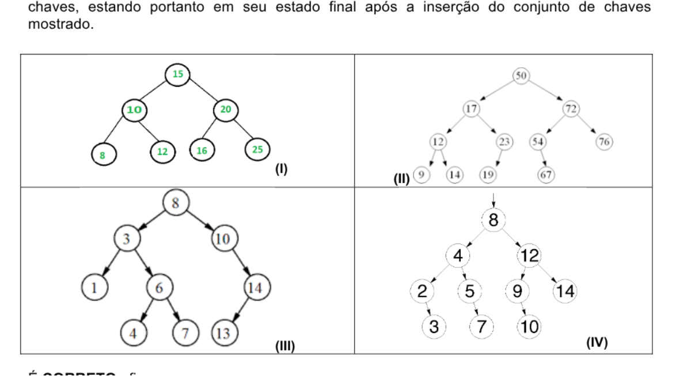
É CORRETO afirmar que:
B. Assunto 0101.
Edital 055/2017 · Questão 20
Ao inserirmos as chaves 2, 4, 6, 8, 10 e 12, nessa ordem, em uma árvore AVL que estava originalmente vazia, a diferença de altura entre a sub-árvores que está à direita da raiz e a sub-árvore que está à esquerda da raiz será:
A. rodando AVL (programa em C): raiz 8, esquerda 4 (2, 6), direita 10 (12); diferença 0 Assunto 0101.
Edital 023/2018 · Questão 03
Analise as duas afirmativas a seguir, relacionadas a árvores de busca:
I. Uma árvore AVL é uma árvore binária de busca autobalanceada que respeita algumas propriedades fundamentais.
II. Como todas as árvores, ela tem uma propriedade chamada altura, que é igual ao valor da altura de sua raiz.\
Sabendo que a altura de uma folha é igual a um (01) e que a altura de um nó pai é igual ao máximo das alturas de seus filhos mais um, qual estrutura NÃO pode representar uma árvore AVL?
D. Com folha de altura 1, três nós em altura três é uma cadeia, com fator de balanceamento 2 na raiz. Assunto 0101.
Edital 023/2018 · Questão 04
Um heap (fila de prioridade) é uma estrutura de dados muito importante, que tem duas utilidades principais: organizar acesso a um recurso com base na prioridade dos requerentes (processos, impressões, etc.) ou servir como base a um algoritmo de ordenação muito eficiente denominado heapsort. Para poder servir a esses propósitos, um heap possui uma série de propriedades especiais que têm que ser mantidas por todas as operações nelas realizadas. Levando em consideração estas propriedades, analise as afirmativas abaixo.
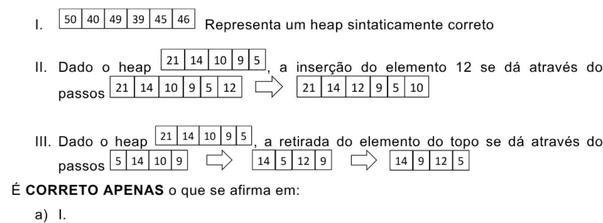
I. 50 40 49 39 45 46 representa um heap sintaticamente correto
II. Dado o heap 21 14 10 9 5, a inserção do elemento 12 se dá através dos passos 21 14 10 9 5 12 ⇒ 21 14 12 9 5 10
III. Dado o heap 21 14 10 9 5, a retirada do elemento do topo se dá através dos passos 5 14 10 9 ⇒ 14 5 12 9 ⇒ 14 9 12 5\
É CORRETO APENAS o que se afirma em:
B. Assunto 0102.
Edital 023/2018 · Questão 06
Uma lista ordenada de N números é inserida em uma pilha e depois retirada, sendo que, a cada POP, o elemento retirado é inserido em uma árvore de busca binária. Após a completa inserção de todos os elementos nesta árvore, são feitas buscas de números na mesma. O tempo médio de busca de um número nesta árvore é
C. Lista ordenada pela pilha sai ordenada ao contrário e a ABB degenera em lista: busca O(N). Assunto 0099.
Edital 023/2018 · Questão 07
Assinale cada afirmativa abaixo como verdadeira (V) ou falsa (F). Em seguida, marque a opção que corresponde à sequência CORRETA.
( ) Uma árvore não-vazia é balanceada AVL se, pelo menos, uma de suas árvores, esquerda ou direita, for balanceada AVL; ( ) As árvores cheias são árvores balanceadas AVL; ( ) Uma boa condição de balanceamento AVL deve assegurar que a altura de uma árvore com n nós é da ordem de O(log n); ( ) Uma árvore AVL é uma árvore balanceada pela altura; ( ) Ao inserir ou remover um item em uma árvore AVL, o custo adicional para balancear esta árvore é da ordem de O(n/2).
B. F-V-V-V-F: AVL exige as duas subárvores AVL, cheias são AVL e o custo de balancear é O(log n), não O(n/2). Assunto 0101.
Edital 023/2018 · Questão 08
Considere uma estrutura do tipo árvore binária que começa vazia. Nela são introduzidos os números 2, 10, 5, 7, 1, 0 e 8, exatamente nessa ordem. Se essa árvore for lida em pós-ordem, que sequência de números será impressa?
C. Rodado em C: pós-ordem 0 1 8 7 5 10 2. Assunto 0098.
Edital 023/2018 · Questão 10
Considere a seguinte árvore de pesquisa binária:

Ao executarmos o procedimento de remoção da raiz, na nova árvore binária de busca, teremos como novo nó raiz:
D. Assunto 0100.
Edital 023/2018 · Questão 15
As árvores são estruturas de dados poderosas e se subdividem em vários tipos, cada um dos quais com suas características próprias. Relacione os tipos de árvores, apresentados na coluna da esquerda, com as suas respectivas características, indicadas na coluna da direita:
| Tipo de árvore | Característica |
|---|---|
| I – Heap | W – Pode degenerar se os elementos forem inseridos de forma ordenada. |
| II – Rubro-Negra | X – É balanceada. |
| III – Avore AVL | Y – Têm altura sempre proporcional/próxima a O(log2 n), onde n é o número de nós que contém. |
| IV – Árvores binária de busca | Z – São sempre completas. |
Estão CORRETAS as associações:
D. Heap com altura log n, ABB que degenera, AVL balanceada. Ver observação. Assunto 0101.
Edital 023/2018 · Questão 16
Sobre o algoritmo de ordenação heapsort, marque a alternativa CORRETA:
B. O heap é uma árvore binária em vetor; o pior caso do heapsort é O(n log n), melhor que o do quicksort. Assunto 0103.
Edital 061/2018 · Questão 05
A árvore binária de busca, formada pela inserção dos números 100, 80, 25, 72, 23, 42 e 5, nesta ordem, terá como nós folha os números I e II, e como pai do nó 72 o número III. As lacunas I, II e III são preenchidas CORRETAMENTE e, respectivamente, por:
B. Folhas 5 e 42, pai do 72 é o 25. Assunto 0099.
Edital 061/2018 · Questão 13
Suponha que uma Árvore Binária de Busca possui números entre 1 e 1000 e que se quer procurar pelo número 363. Qual sequência abaixo NÃO poderia ser a sequência de nós examinados?
C. Só a C é impossível: após 911 vem 240 (à direita de 202, esquerda de 911), e o 912 sairia do intervalo (240, 911). A nova E é válida (350, 392, 358 cabem). Assunto 0099.
Edital 061/2018 · Questão 15
Se em uma árvore binária de pesquisa a diferença de altura entre a subárvore à esquerda e a subarvore à direita de um dos nós for maior que 1, pode-se concluir que:
E. A ABB com diferença maior que 1 não é AVL, mas pode ser rubro-negra: nada se conclui com certeza. Assunto 0101.
Edital 061/2018 · Questão 19
Quanto ao algoritmo e estrutura de dados no caso de árvore AVL, analise as afirmativas abaixo como verdadeiras (V) ou falsas (F) e assinale a alternativa que apresenta a sequência CORRETA de cima para baixo:
( ) Uma árvore AVL é dita balanceada quando, para cada nó da árvore, a diferença entre as alturas das suas sub-árvores (direita e esquerda) não é maior do que um. ( ) Caso haja diferença de altura maior que 1 ente as sub-árvores à direita e à esquerda de qualquer nó, é necessário que se realizem rotações com o objetivo de reduzir tal diferença. ( ) A operação de rotação realizada em um ponto da árvore, após a inserção, pode resultar em uma árvore ainda desbalanceada, podendo ser necessária a realização de novas rotações que, na pior das hipóteses, podem ser propagadas até a raiz.
D. V-V-F: após inserção uma rotação (simples ou dupla) basta; a propagação até a raiz é da remoção. Assunto 0101.
Edital 033/2019 · Questão 02
A parte essencial do Heap Sort é a construção do heap máximo. Considerando a árvore mostrada abaixo, o nó 24 viola a propriedade do heap máximo. Uma vez que o procedimento de heap é aplicado a ele, em que posição ele estará?

D. Assunto 0102.
Edital 033/2019 · Questão 04
A figura abaixo mostra uma árvore B de ordem 5. Qual é o resultado da remoção do nó 130 dessa árvore?
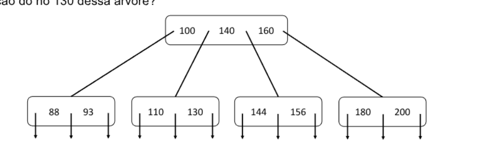
Alternativas a) e b):

Alternativas c) e d):

C. Folha 110 fica com 1 chave; irmãos têm o mínimo (2) e não emprestam, então funde com a direita: 110 140 144 156, raiz 100 160. Assunto 0097.
Edital 033/2019 · Questão 08
Quais são, respectivamente, o pior caso e o caso médio de uma árvore de busca binária em termos de complexidade?
D. ABB sem balanceamento: pior caso O(n), caso médio O(log n). Assunto 0099.
Edital 033/2019 · Questão 09
Uma árvore B de ordem 4 e de altura 3, onde ordem é o número máximo de filhos em cada nó, terá um máximo de chaves igual a?
A. Ordem 4 (4 filhos, 3 chaves), altura 3 em arestas (Cormen): 1+4+16+64 = 85 nós, 85 x 3 = 255 chaves. Assunto 0097.
Edital 033/2019 · Questão 12
Qual é a altura máxima de qualquer árvore AVL com 7 nós? Assuma que a altura de uma árvore com um único nó seja 0.
B. Mínimo de nós por altura em AVL: 1, 2, 4, 7; 7 nós cabem em altura 3 (nó único = 0). Assunto 0101.
Edital 033/2019 · Questão 16
Ao se representar a heap máxima da figura abaixo em um array, a ordem dos elementos no array será a seguinte:

E. Array por níveis: 88 66 77 33 44 55 75 30 22 5. Assunto 0102.
Edital 033/2019 · Questão 19
Ao se construir uma árvore AVL, inicialmente vazia, com as seguintes chaves na ordem indicada - 2, 3, 5, 6, 9, 8, 7, 4, 1 – e sabendo que que se uma inserção fizer com que a árvore fique desequilibrada, é necessário executar as rotações para manter o equilíbrio, o resultado final da árvore AVL é:

A. Rodado em C: raiz 6; 3 e 8; 2, 5, 7, 9; 1, 4. Assunto 0101.
Edital 033/2019 · Questão 20
Sobre as afirmações abaixo, marque a alternativa CORRETA
I. A subárvore da raiz de um árvore vermelho e preto é sempre uma árvore vermelha e preta.
II. O irmão de uma referência de filho nulo em uma árvore vermelha e preta é outra referência de filho nulo ou um nó vermelho.
III. A pior complexidade de tempo da operação de inserção em uma árvore AVL é O(log n), onde n é o número de nós na árvore.\
B. I falsa (a raiz de uma subárvore pode ser vermelha); II e III verdadeiras. Assunto 0101.
Edital 060/2019 · Questão 02
Dado os seguintes elementos (10, 20, 15, 25, 30, 16, 18, 19), qual desenho representa uma árvore AVL, inicialmente vazia, que é preenchida com esses elementos, na ordem apresentada, e que tem as devidas rotações efetuadas?

A. Assunto 0101.
Edital 060/2019 · Questão 09
Qual das afirmações a seguir é VERDADEIRA sobre árvores rubro-negra (vermelho e preto)?
A. Propriedade da rubro-negra: caminho mais longo no máximo o dobro do mais curto. Assunto 0101.
Edital 060/2019 · Questão 12
Quais das seguintes árvores abaixo respeita as regras básicas de balanceamento de árvores AVL?
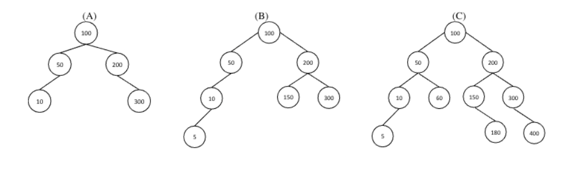
D. A e C respeitam o fator de balanceamento; em B, o 50 fica com subárvore esquerda de altura 2 e direita vazia. Assunto 0101.
Edital 060/2019 · Questão 15
Comparando árvores AVL e rubro-negras, qual das seguintes afirmações é VERDADEIRA:
A. AVL é mais rígida (altura menor) e rotaciona mais. Assunto 0101.